Un parque de caravanas apiladas en vertical, inspirado en "The Stacks" de Ready Player One. Pobre pero tecnológico: chapa reciclada, pasarelas de rejilla, paneles solares, aires acondicionados y parabólicas.
Todo se genera con un sistema procedural en Houdini, controlado por sliders, desde la forma de cada caravana hasta la distribución de las torres.
Houdini 22SOPs proceduralesInstancias packedKarmaConstruido con Claude vía MCP
1aGeneradores de caravanaHecha · 8 tipos, 32 subvariantes
1bResto del kitHecha · 89 piezas en 6 familias
2Layout y apiladoHecha · 162 unidades, 6 bloques
3Estructura metálicaHecha · nada flota
4Circulación y accesosHecha · toda puerta llega al suelo
5Equipamiento, clutter y cablesHecha · el parque completo
6HDA e interfazEn curso · bloque 3 de 5
7Lookdev y luzPendiente
8Desgaste y detalle finoPendiente
9Visualizador proceduralPendiente
10CinemáticaPendiente
Referencias
Escala humana, atardecerTorres densas y plaza
Avances
Fase 6 · bloque 323 oct 2026
Un asset con tres caras
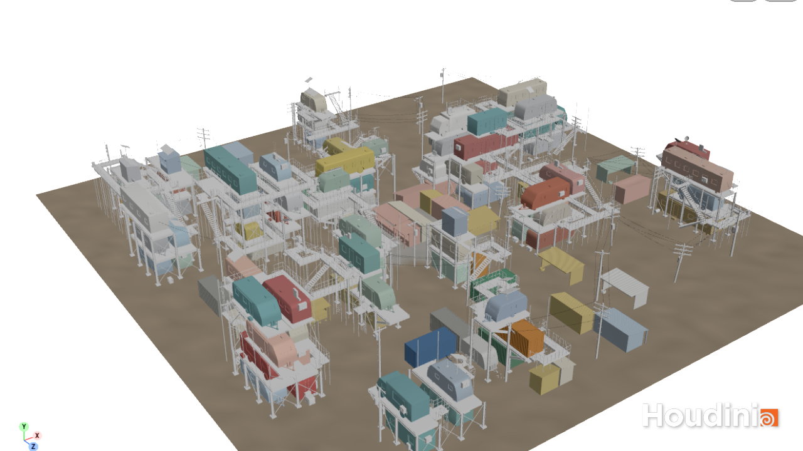
Preset Calle: escala humana, de 2 a 4 pisos y mucha vida a pie de calle
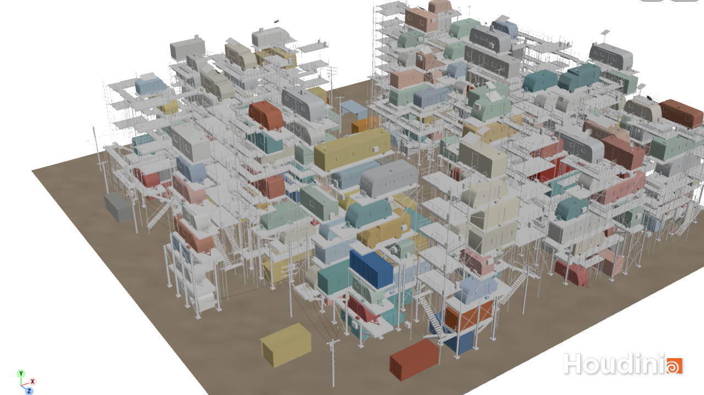
Preset Denso: 8 pisos, caos máximo y pasarelas cruzando el vacío
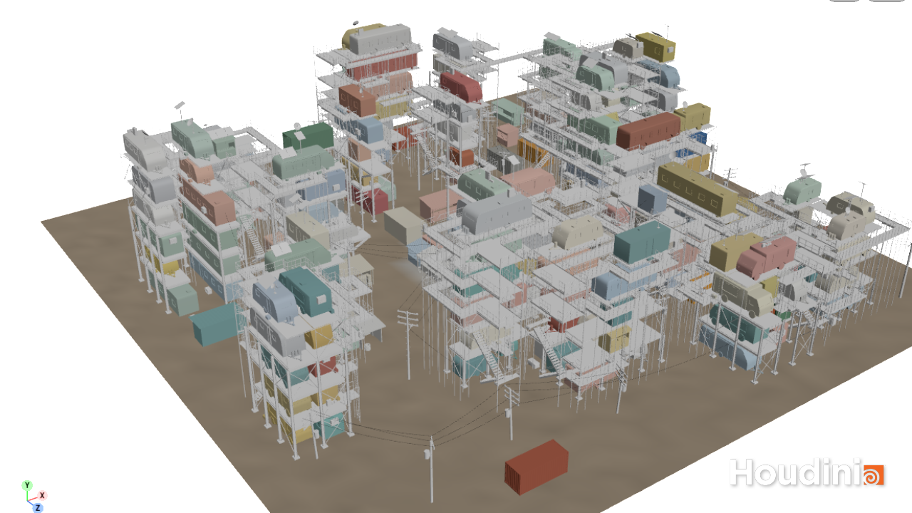
Preset Ordenado: las mismas reglas con el caos casi a cero
El generador ya es un HDA: un nodo que se suelta en cualquier escena y produce el parque entero desde su interfaz. Arriba de todo hay un menú de estilos que reconfigura decenas de sliders de una vez: Calle, a escala humana como la referencia del atardecer; Denso, la versión vertical de la referencia nocturna; y Ordenado, el mismo sistema con el caos casi a cero, como contraste. La interfaz queda completa, con ayuda en cada slider y dos controles nuevos para el visualizador: una línea de tiempo de construcción y un aislador de etapas.
Nota técnicaLos presets no son fotos de valores: cada uno devuelve el parque a su estado de referencia y cambia solo lo que define su estilo, sin tocar las semillas, así que se pueden combinar con cualquier variante. El código vive dentro del propio asset. Para darlo por bueno, se creó una instancia nueva en otra parte de la escena, sin entradas ni ajustes: su huella coincide pieza a pieza con la del parque de referencia. Y en los cuatro estilos todas las puertas siguen llegando al suelo.
+3 sliders3 presets + por defectode 93 a 265 unidades0,11–0,32 s por preset100 % accesible
Fase 6 · bloque 223 oct 2026
Entradas de verdad
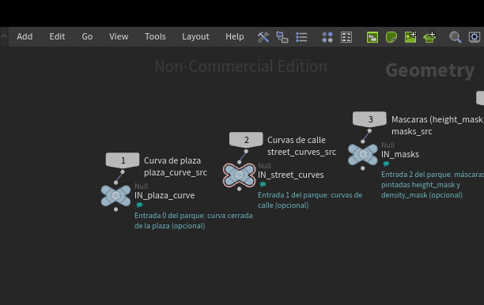
Las tres entradas del generador: curva de plaza, curvas de calle y máscaras pintadas
El generador pasa a ser un nodo de geometría como cualquier otro, con tres entradas. Para dirigir el parque ya no hay que escribir rutas: se conecta una curva para dar forma a la plaza, otras para trazar calles y una malla pintada para decidir dónde crece en altura o en densidad. Si una entrada llega vacía, el parque vuelve a su versión procedural sin protestar.
Nota técnicaToda la red se trasladó un nivel más adentro sin cambiar el resultado: los nodos se copiaron en orden de dependencia, de modo que cada uno encontraba ya dentro a sus fuentes y conservaba sus cables, y las referencias relativas a los sliders siguieron apuntando al mismo sitio porque todo bajó a la vez. La huella del parque, antes y después, es idéntica. Cada interruptor de entrada se protege con una condición: solo actúa si la entrada trae geometría.
La biblioteca dentro del parque: cada familia se lee del disco, se empaqueta y se junta en OUT_lib
Empieza la fase 6: convertir el generador en una herramienta (un HDA) que se pueda soltar en cualquier escena. El primer paso es cortar su dependencia de la biblioteca de la escena. Hasta ahora el parque iba a buscar las caravanas, puestos y postes a otro objeto mediante 18 rutas; ahora los lee directamente de los pools horneados en disco, con una sola carpeta como parámetro. El resultado es exactamente el mismo parque, comprobado pieza a pieza.
Nota técnicaEs la separación de estudio entre generar y usar assets. Los generadores siguen en la escena y hornean sus variantes a disco; el parque solo lee esos ficheros. Así el HDA es autocontenido, y cambiar un asset es volver a hornear su pool sin tocar el parque. Para comprobar que nada cambiaba se sacó una «huella» del parque antes y después: número de piezas, suma de posiciones por etapa y un hash de los nombres de todas las instancias.
La plaza: mercado, postes y cables entre las torres
Se cierra la fase 5 con el parque montado de punta a punta: caravanas y contenedores reales, estructura, pasarelas con barandillas, equipamiento, clutter, suelo, mercado y tendido eléctrico. Ya no hay cajas de colores: lo que se ve es lo que se renderizará. El cierre también deja preparado el visualizador: cada pieza sabe en qué etapa nace y en qué orden aparece.
Nota técnicaCada etapa marcaba su orden de construcción donde le venía mejor: en el punto de cada instancia o en la primitiva de cada barrido. Al juntarlo todo, el valor que faltaba se rellenaba con un cero y media estructura parecía nacer a la vez que el suelo. Un último nodo normaliza la etiqueta por pieza antes de la salida, de modo que en la fase 9 bastará con un solo parámetro para ver crecer el parque. Y todo el parque se recocina en menos de dos décimas de segundo al cambiar la semilla, así que no hace falta cachear nada.
52.617 primitivas3.556 instancias packed6 etapas con orden de construcción0,17 s al cambiar la semilla
Fase 5 · bloque 523 oct 2026
Postes y cables
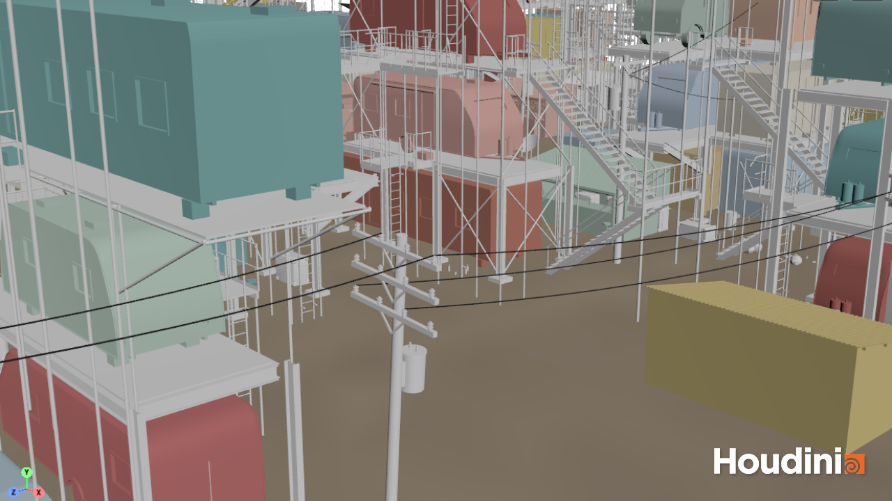
Un poste con cruceta y transformador en el callejón; los hilos cuelgan hacia los postes vecinos
El parque se electrifica. Por los callejones y patios aparecen postes eléctricos con crucetas y transformadores, unidos por tramos de dos o tres hilos que cuelgan con su comba, y desde ellos bajan acometidas a las caravanas de los pisos bajos. Ningún cable atraviesa una pasarela, una caravana o un pilar: el que no encuentra paso libre, no se tiende.
Nota técnicaLos cables se proponen de más y se descartan. Cada poste se une a sus vecinos más cercanos y cada caravana baja pide una acometida a los postes de alrededor; cada candidato se convierte en una catenaria y se recorre cada 30 cm preguntando a la rejilla de ocupación si ahí hay una caravana, una pasarela o un pilar. Sobreviven los más cortos, con un máximo de dos tramos por poste para que se lean líneas y no una telaraña.
La plaza con bloques de puestos pegados, en L y espalda con espalda, con pasillos entre ellos
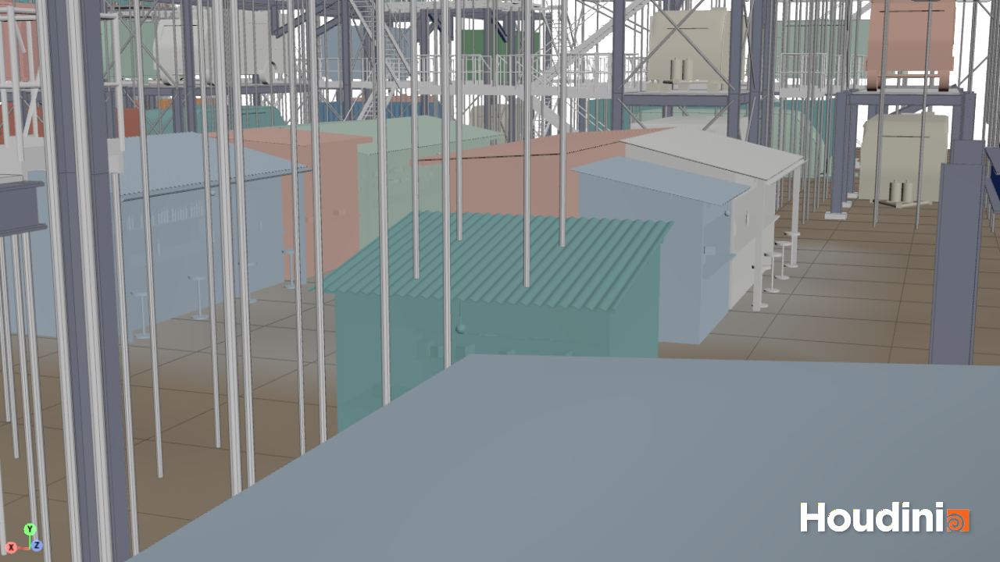
Un puesto bajo la pasarela: las patas apoyan en su tejado
Los puestos de la plaza dejan el círculo y se agrupan como en un mercado de verdad: bloques en L, en T, en tira o espalda con espalda, con un pasillo delante de cada mostrador. Y el comercio se cuela también bajo el andamio: algunos puestos ocupan las celdas que tienen una pasarela encima, y las patas de la pasarela, en lugar de llegar al suelo, se apoyan en su tejado.
Nota técnicaLos bloques son pequeñas plantillas de celdas que se prueban en cada rincón de la plaza, girándolas y reflejándolas, hasta encontrar las que caben dejando libre la celda de delante de cada puesto; luego cada fila se trocea en puestos de una, dos o tres celdas. Lo de las pasarelas obligó a cambiar el orden del sistema: los puestos de abajo se deciden antes de construir las patas, y cada pata lanza un rayo hacia abajo para encontrar el tejado inclinado donde apoyarse.
3 bloques, 10 puestos en la plaza4 bajo pasarelas16 patas sobre tejados0 roces
Fase 5 · revisión de los puestos23 oct 2026
Puestos de verdad: tamaños y tejados
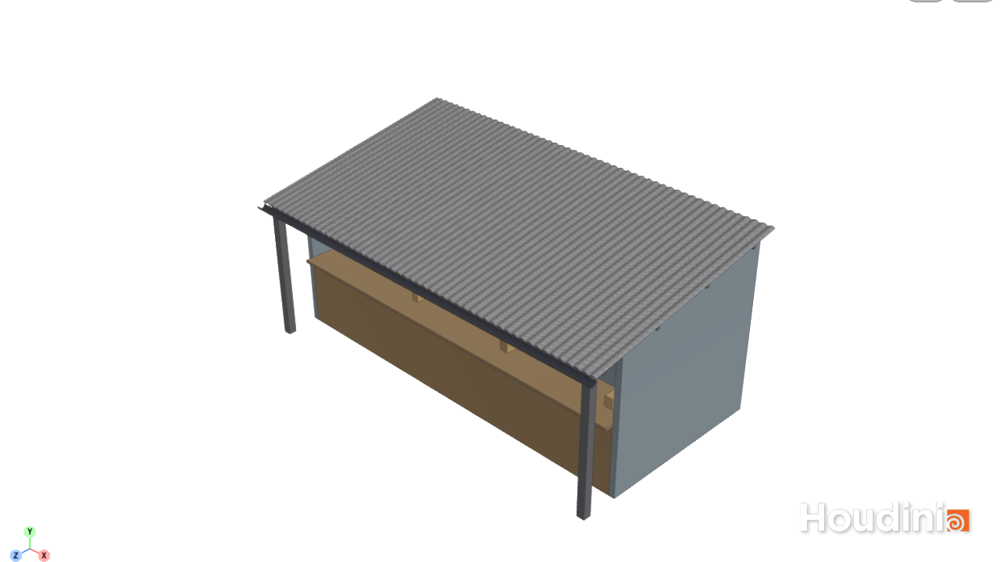
Tejado a un agua: viga sobre los postes, correas bajo la chapa y canalón
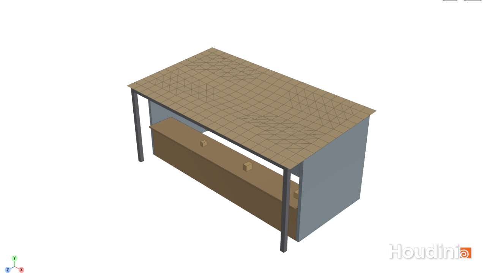
La lona cuelga entre las paredes y la viga del frente
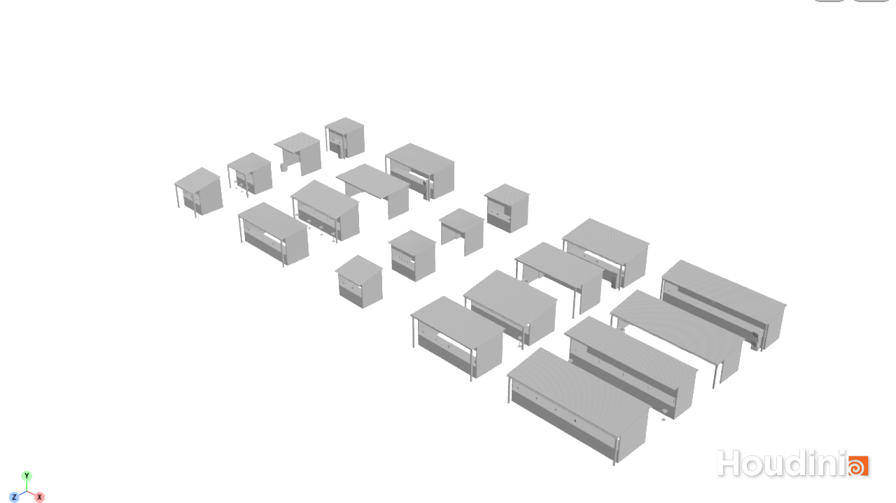
El pool nuevo: veinte puestos de una, dos y tres celdas
Al ver la plaza, el diagnóstico estaba claro: todos los puestos medían lo mismo y su tejado, una lámina sin grosor con la misma inclinación, no se creía. El generador gana tres tejados (chapa casi plana con remate, a un agua con correas y canalón, y lona que cuelga entre las paredes), una viga sobre los postes para que el volado apoye en algo y tamaños modulares de una, dos y tres celdas de ancho. Es el primer paso para que los puestos de la plaza se agrupen en bloques, como un mercado, en lugar de formar un anillo.
Nota técnicaEl ancho de cada puesto no es libre: sus paredes miden 2,74, 5,74 u 8,74 m para que, con el vuelo lateral del tejado, ocupen exactamente una, dos o tres celdas de la rejilla de 3 m. Así podrán colocarse pegados unos a otros sin que choquen los tejados. Por la misma razón, los neumáticos y los televisores salen al frente en vez de a los lados. Y una subvariante compacta por oficio, sin postes ni volado largo, es la que puede subir a los pisos sin invadir el rellano de la pasarela.
3 tipos de tejado20 puestos en el pool1, 2 y 3 celdas de anchogrupo nuevo: lona
Fase 5 · bloque 423 oct 2026
La plaza abre sus puestos
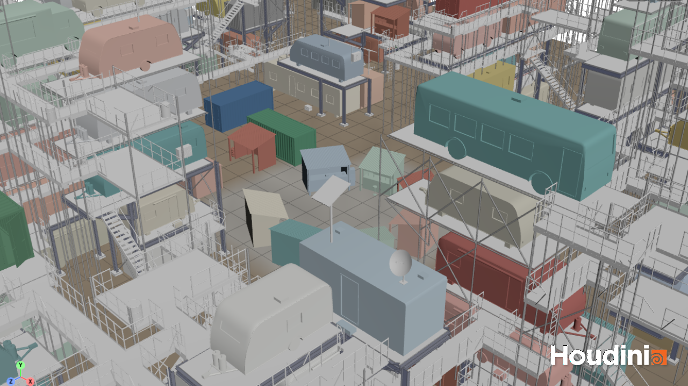
El anillo de puestos de la plaza, mirando hacia el centro, con contenedores y torres alrededor
El suelo deja de ser vacío: tierra en los patios y callejones, la plaza pavimentada y, alrededor de ella, un anillo de puestos de chapa (tiendas, bares, talleres y electrónica) mirando hacia el centro. Otros puestos se asoman a los callejones, hay contenedores de almacén en los patios y, como pidió el diseño, algunas caravanas de los pisos intermedios son en realidad puestos abiertos a su pasarela: el comercio también sube por las torres.
Nota técnicaLos puestos de la plaza se reparten en un círculo y cada uno comprueba que su huella completa cae dentro de la plaza. Los de calle buscan dos celdas libres seguidas con un callejón al mismo lado. Los de los pisos altos no se colocan después, sino que se deciden en el propio apilado: una caravana se convierte en puesto antes de que existan la estructura y las pasarelas, así que todo lo que viene detrás ya lo trata como tal. Y el clutter del suelo lee qué celdas están ocupadas para no meterse debajo de un mostrador.
+9 sliders7 puestos en la plaza6 en las calles6 entre plantas6 contenedores0 roces
Fase 5 · bloque 323 oct 2026
Bidones, cajas y botellas
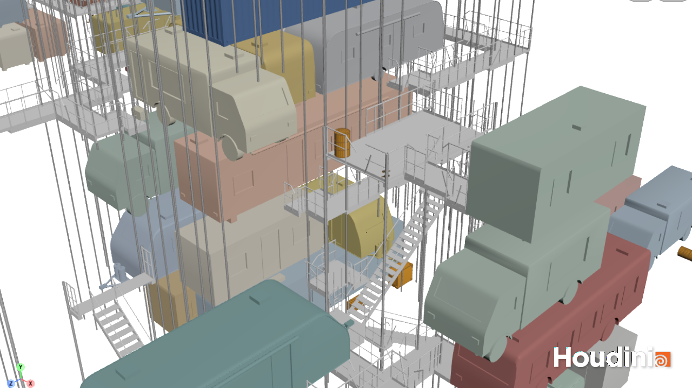
Los objetos sueltos, en naranja: un bidón en el rincón de una pasarela y cajas junto a las fachadas
El parque empieza a parecer habitado: bidones, cajas, botellas y maletas de electrónica en los rincones de las pasarelas, en las esquinas de los forjados de las escaleras y en el suelo, arrimados a las fachadas. Nunca en medio del paso: siempre queda al menos 0,8 m libre, así que las 117 puertas siguen teniendo salida. Ocho sliders controlan cuánto hay y de qué tipo, y cambiar su semilla no mueve nada más.
Nota técnicaEl truco es separar el dónde del qué. Primero se calculan los huecos en los que un objeto no estorba: el rincón exterior de un cruce en esquina, el fondo de saco de una pasarela, una franja junto a una fachada. Después cada hueco elige por pesos un objeto que quepa en él. La regla del paso libre queda garantizada al construir los huecos, y la comprobación final solo tiene que confirmar que no hay roces.
+8 sliders319 huecos111 objetos0 roces
Fase 5 · bloque 223 oct 2026
Placas, antenas y aires acondicionados
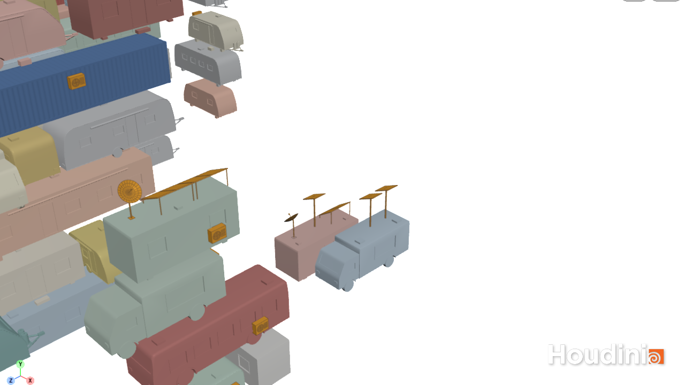
El equipamiento resaltado en naranja: paneles solares, parabólica y aires acondicionados
Las caravanas reciben su tecnología reciclada. Los paneles solares y las parabólicas solo van en techos libres, donde llega el sol y la señal; los aires acondicionados se cuelgan de la fachada que no da a una pasarela, para no estorbar el paso; las cajas de electrónica van arriba si hay sitio y, si no, junto a la fachada. Son 114 piezas sin un solo roce con la estructura, las pasarelas o las caravanas vecinas.
Nota técnicaCada caravana del pool trae puntos de anclaje en su propio espacio: techo, fachada y puerta. Un wrangle los lleva al mundo con la posición y la orientación de cada instancia y decide qué aparato va en cada uno consultando la ocupación y la red de pasarelas. Sea cual sea el modelo de caravana, el equipamiento cae en su sitio. La captura destapó un fallo que las comprobaciones numéricas no veían: los puntos nuevos heredaban un tamaño cero de las unidades y las piezas salían aplastadas.
Las caravanas del pool, cada una con su color, sobre la estructura y la circulación
Las cajas de colores que han servido para diseñar el apilado se sustituyen por las caravanas y contenedores reales. Cada punto de unidad ya sabía qué subvariante del pool le tocaba y dónde estaba su pivote, así que el cambio es un único nodo. Empieza la fase 5, que llena el parque de vida: equipamiento, objetos sueltos, puestos, postes y cables.
Nota técnicaEs la regla de oro del proyecto en acción: los puntos deciden y la geometría se copia al final. 162 unidades salen de solo 32 mallas de caravana horneadas a disco más los contenedores, todas como instancias packed. El color y el óxido no están en la malla, sino en atributos de cada instancia, que Karma leerá como primvars.
162 instancias32 mallas de caravana1 nodo
Fase 4 · bloque 5 · cierre23 oct 2026
Toda puerta llega al suelo
La fase de circulación se cierra con la prueba que la define: desde cada puerta de los pisos altos se busca un camino por la red ya construida (pasarelas, escaleras, escaleras de mano y puentes) hasta el suelo. Las 117 lo tienen. La prueba encontró además una puerta que las comprobaciones anteriores habían dejado pasar: en el borde del solar, encerrada entre dos caravanas, la escalera de su torre y otra caravana debajo. Ahora sale por una escalera de mano al piso de arriba. Toda la circulación lleva su etapa y su orden de aparición para el visualizador.
Nota técnicaLa comprobación final no reutiliza el grafo con el que se trazaron las pasarelas, sino la red resultante: así mide lo que de verdad se ha construido. Fue lo que destapó el fallo: el nodo que limpiaba las aristas sobrantes borraba también los puntos que se quedaban sin aristas, y con ellos desaparecía la única puerta sin vecinos libres. Ahora las aristas se borran conservando los puntos.
117 / 117 puertas0 roces18.875 piezas con orden de aparición
Fase 4 · bloque 423 oct 2026
Barandillas: intactas, rotas o ninguna
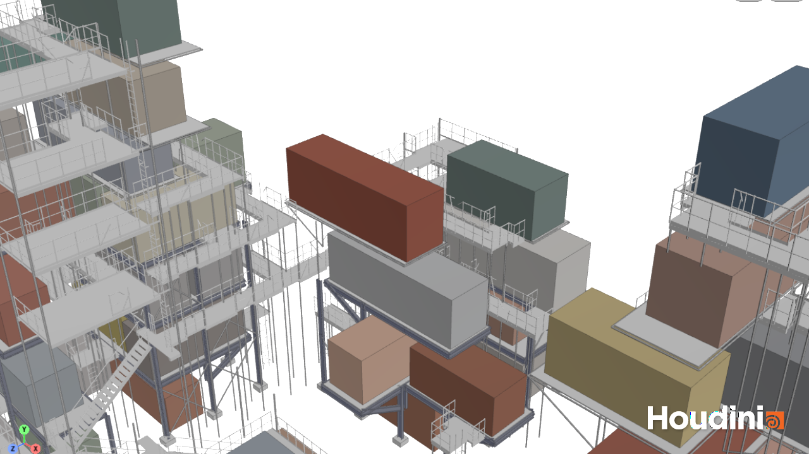
Barandillas en los bordes abiertos; algunas dobladas y otras que faltan
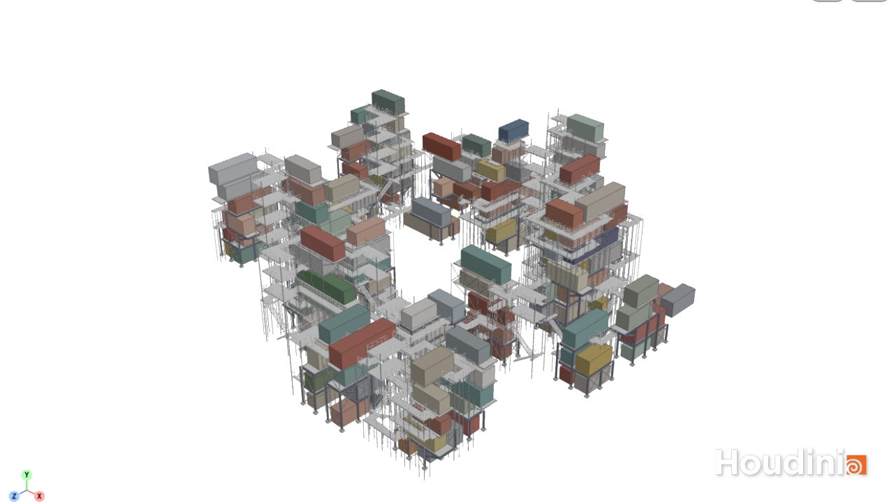
El parque con barandillas
Cada borde de pasarela por el que alguien podría caerse lleva barandilla, salvo por donde se entra: el lado de la puerta, la llegada de la escalera o la de una escalera de mano. Luego el desgaste: dos de cada tres tramos están intactos, uno de cada cuatro está roto y el resto ha desaparecido, con tres sliders para cambiar la mezcla. Donde un pilar cae en la línea de la barandilla, la barandilla se corta y el pilar hace de montante.
Nota técnicaCada borde es solo un punto con su longitud y su orientación, y una sola regla decide si está abierto: si por ese lado no sale nada (otro tramo, un rellano o una escalera), lleva barandilla. Para no atravesar pilares, cada tramo busca en planta, con una nube de puntos, los pilares que caen en su línea y se parte en trozos alrededor de ellos. El estado de cada trozo sale de su posición, así que no cambia aunque cambie el orden de la geometría. Las piezas son las barandillas del kit, estiradas a lo largo.
+3 sliders2.069 tramos65 / 26 / 9 %0 roces
Fase 4 · bloque 323 oct 2026
Rejillas, escaleras y puentes
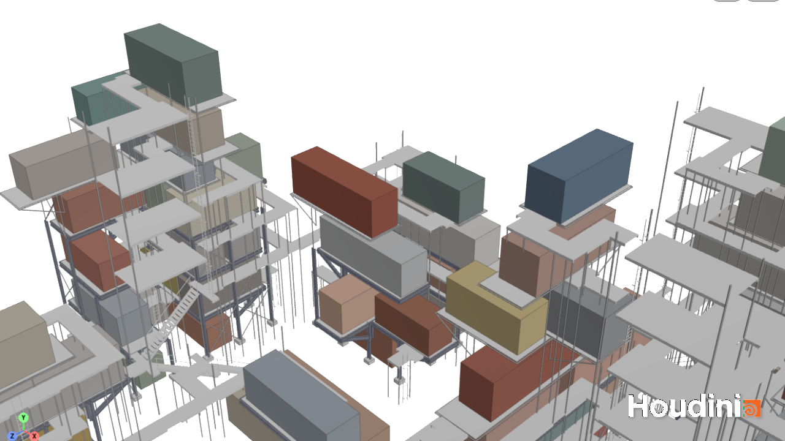
Pasarelas de rejilla con sus patas de tubo, escaleras en zigzag y escaleras de mano
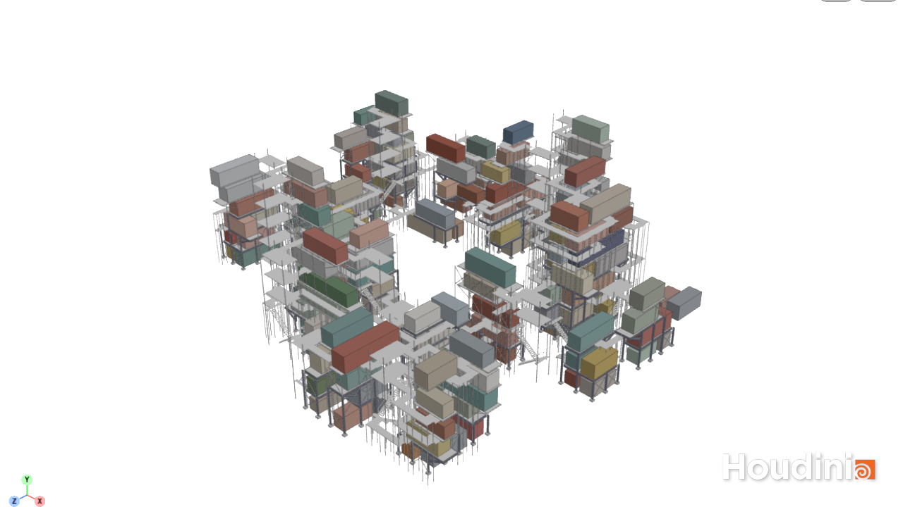
El parque con estructura, caravanas y circulación completa
La red de pasarelas se convierte en piezas reales del kit: tramos de rejilla, nudos, rellanos ante cada puerta, escaleras de zanca en zigzag en los núcleos y escaleras de mano por encima. Cada nudo baja patas de tubo hasta lo primero que encuentra (el techo de una caravana, otra pasarela o el suelo), y diez puentes cruzan entre torres. Este bloque también corrigió un error del anterior: el grafo tenía conexiones en diagonal que no deberían existir y, al quitarlas, seis puertas se quedaban encerradas. Ahora el grafo admite bajar por escalera de mano, como en las referencias, y todas vuelven a tener salida.
Nota técnicaCada torre es un grafo 3D: las celdas de cada piso se unen con sus cuatro vecinas y, con un coste alto controlado por un slider, con la celda de debajo. Find Shortest Path elige así entre caminar hasta la escalera o bajar por una escalera de mano, y solo usa la segunda cuando compensa. Después, una comprobación muestrea cada pieza contra la malla real de las caravanas y contra la estructura de la fase 3, incluido el hueco de paso de dos metros sobre cada pasarela. Fue ella la que obligó a rediseñar la llegada a las escaleras: entrar de lado metía la pasarela entre los pilares de la torre vecina, así que ahora al rellano se entra siempre de frente.
+2 sliders122 / 122 puertas con salida10 puentes36 escaleras de mano0 roces1.055 piezas packed
Fase 4 · bloque 222 oct 2026
De cada puerta a la escalera
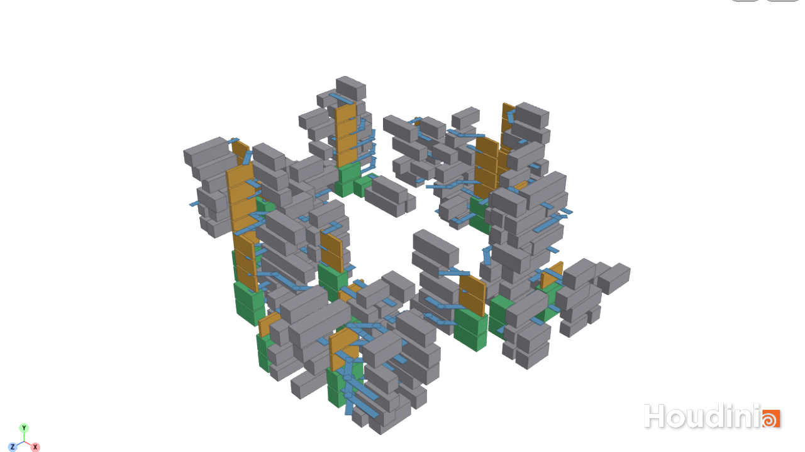
En azul, la red de pasarelas: cada puerta de los pisos altos tiene un camino hasta el núcleo de su torre
Con el núcleo de cada torre decidido, toca llegar a él. Cada puerta de los pisos altos tiene delante una celda reservada desde el apilado, y desde ahí se busca el camino más corto hasta la escalera de su torre, piso a piso. La red de pasarelas es la suma de todos esos caminos: donde dos coinciden, comparten tramo. (Ojo: el recuento de este bloque, 123 de 123 puertas conectadas, salía de un grafo con conexiones en diagonal que no debían existir; se corrigió en el bloque 3.)
Nota técnicaCada piso de cada torre es un grafo de celdas unidas con sus cuatro vecinas, y el nodo Find Shortest Path hace el resto. El coste de cada celda decide la forma: pasar por dentro de la torre es barato, volar fuera de ella sale caro y cruzar un callejón más aún, así que las pasarelas se pegan a las caravanas y solo salen al vacío cuando no queda otra. Como una celda puede rodear a dos torres, cada torre tiene su propia copia del grafo, apilada en una altura ficticia para que no se mezclen; la posición real se recupera después.
317 celdas de pasarela229 tramosCorregido en el bloque 3: ver la entrada siguiente
Fase 4 · bloque 122 oct 2026
Un hueco de escalera para cada torre
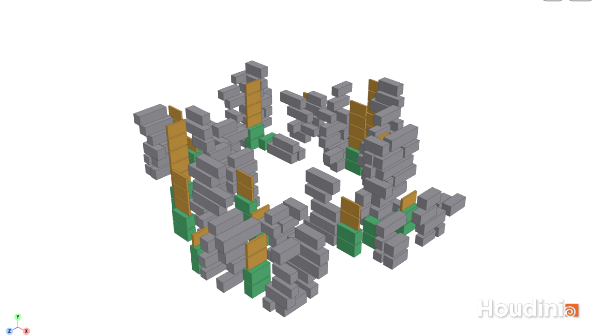
Cada torre con su núcleo: verde donde hay escalera, naranja donde sube una escalera de mano
Empieza la circulación. Antes de tender pasarelas hay que saber por dónde se sube, así que cada torre reserva un núcleo vertical: dos celdas pegadas a su fachada, libres desde el suelo hasta lo más alto de la torre. En los pisos bajos ahí irá una escalera de zanca en zigzag; por encima del piso que marca un slider, escaleras de mano, como en el concept, donde lo alto se alcanza trepando. Las 18 torres con pisos altos tienen el suyo.
Nota técnicaCada celda libre del suelo se prueba como inicio de un núcleo en dos direcciones. Un wrangle consulta la rejilla de ocupación piso a piso y descarta el candidato si en cualquier nivel hay una caravana en voladizo o el hueco reservado para una puerta. Los supervivientes se puntúan (pegados a la fachada en toda su longitud, mejor en un patio que cortando un callejón) y, tras ordenarlos, se queda el primero de cada torre. La primera versión dejaba tres torres sin núcleo; aceptar uno perpendicular a la fachada como segunda opción las resolvió.
+2 sliders18 / 18 torres con núcleo76 tramos
Fase 3 · bloque 5 · cierre22 oct 2026
Acero de verdad, y nada flota
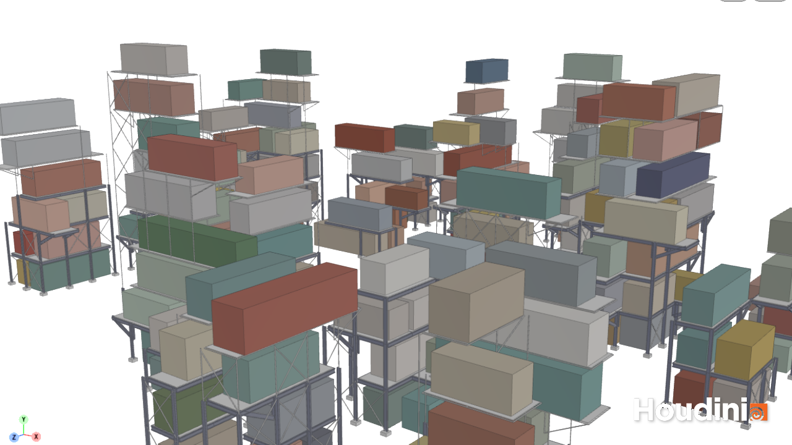
La estructura final del parque, con las caravanas en sus colores de pintura
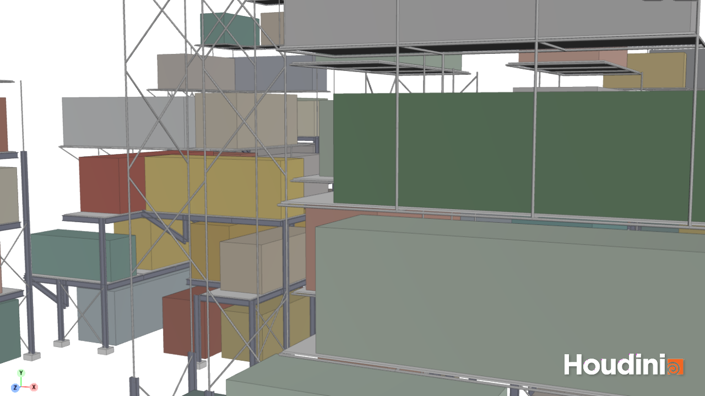
De cerca: IPE en I abajo, tubo de andamio arriba y zapatas en el arranque
Las barras provisionales se convierten en perfiles reales: vigas y pilares en I en los pisos bajos, tubo de andamio arriba, bandejas de rejilla con su canto y zapatas de hormigón bajo cada pilar. Pero lo importante de este bloque no se ve: una comprobación recorre la estructura piso a piso y demuestra que cada bandeja llega al suelo por algún camino de vigas y pilares. Encontró cuatro trozos de forjado sueltos, caravanas interiores que no tocaban ningún pilar, y los sujetó con dieciséis postes. Con eso se cierra la fase 3.
Nota técnicaLa comprobación es un grafo. Cada trozo de forjado conectado de un piso es un nodo, y está sujeto si toca un pilar que llega a su altura. De abajo arriba, a un trozo suelto se le buscan esquinas que tengan debajo otro trozo ya sujeto (o el suelo), y ahí se pone un poste de tubo. Como los postes van siempre en esquinas de celda, quedan fuera de las carrocerías: una última comprobación contra la malla real de las caravanas da cero roces. Además, toda la estructura lleva su orden de aparición, para que el visualizador la construya piso a piso, justo antes que las caravanas de cada nivel.
87 trozos de forjado16 postes de rescate0 flotantes26.716 polígonos20 ms
Fase 3 · bloque 422 oct 2026
Cruces de San Andrés: ya es un andamio
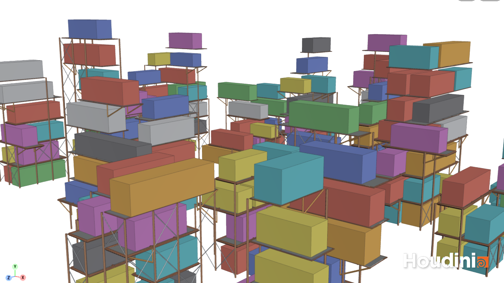
Cruces finas en las caras de las torres, entre pilar y pilar
La estructura gana su última capa de lectura: cruces de San Andrés en las fachadas de las torres. Cada tramo entre dos pilares vecinos, en cada piso, es un panel candidato, y aproximadamente uno de cada tres lleva su cruz de tubo. Hay paneles que nunca la llevan: los que tienen delante una caravana en voladizo o el hueco reservado para una puerta, porque la cruz los taparía. Salen 120 cruces, más densas abajo, donde la torre carga más.
Nota técnicaLos paneles no existen como geometría: son combinaciones de pilar, dirección y piso. Cada pilar recibe una plantilla de 32 candidatos y un wrangle busca a su vecino por su identificador de nudo, comprueba que los dos lleguen a ese piso y que la arista entre ellos sea borde de la torre, y consulta la rejilla de ocupación para no tapar nada. Lo que sobrevive se convierte en dos diagonales con una línea orientada y estirada, la misma técnica que en las ménsulas.
+1 slider120 cruces240 diagonales0 roces
Fase 3 · bloque 322 oct 2026
Ménsulas para lo que vuela
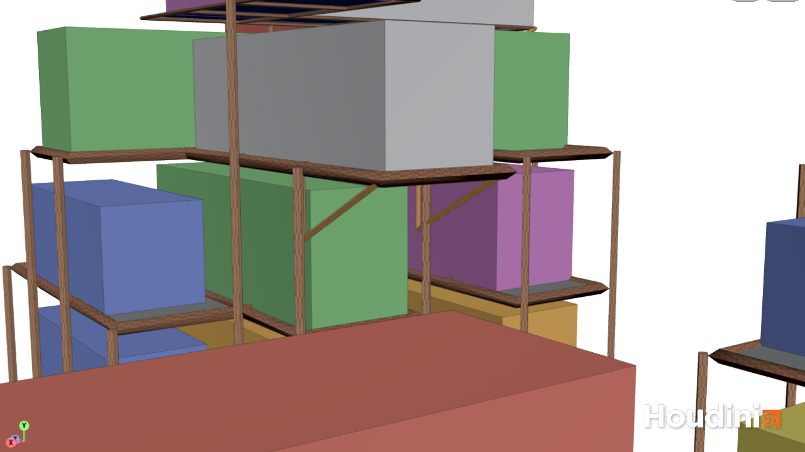
La caravana gris vuela una celda; un jabalcón la sostiene desde la bandeja que sí tiene apoyo
Las caravanas que vuelan sobre el vacío ya no flotan. Cada tramo en voladizo lleva una ménsula a cada lado: un montante que cuelga de la viga de la parte apoyada y un jabalcón que sube en diagonal hasta la punta. Si un tramo vuela entre dos apoyos, como un puente, recibe ménsulas por los dos extremos. En el parque por defecto son 59 celdas en voladizo y 122 ménsulas.
Nota técnicaLa primera versión apoyaba el jabalcón en el piso de abajo, y la comprobación encontró roces: los escalones de las puertas de algunas casetas puestas lado a lado. Para saber si eran reales, la comprobación dejó de usar la caja envolvente y midió contra la malla de verdad de cada caravana, llevando cada punto de la ménsula al espacio local de la pieza. Eran cuatro roces de 2,5 a 4 cm. La solución fue cambiar el diseño, no el número: la ménsula pasó a ser un triángulo colgado de la bandeja apoyada, que queda por encima de cualquier escalón.
+1 slider59 celdas en voladizo122 ménsulas0 roces con la malla real
Fase 3 · bloque 222 oct 2026
Una bandeja de rejilla bajo cada caravana
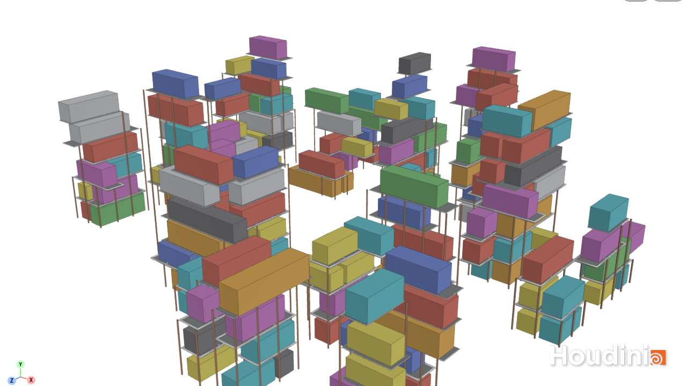
Cada caravana sobre su bandeja; la torre ya se lee como estructura
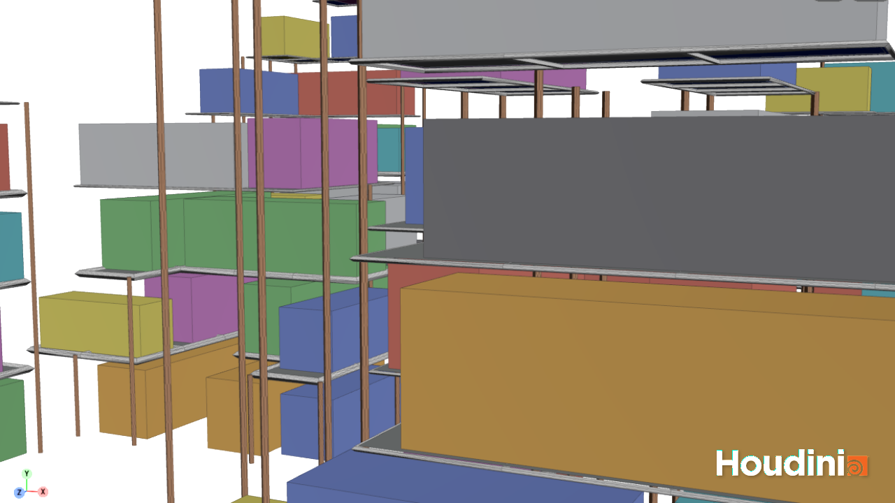
De cerca: el marco de vigas bajo cada bandeja
Cada caravana que no está en el suelo descansa ahora en su propia bandeja de rejilla, algo más ancha que ella, como las plataformas con cornisa del libro. Debajo hay un marco de vigas: largueros a lo largo de la caravana y viguetas cada tres metros. Abajo son vigas IPE pesadas y, a partir del tercer piso, tubo de andamio. El piso exacto del cambio varía un poco de una torre a otra, y todo se controla con sliders.
Nota técnicaLas vigas no se colocan una a una. Cada celda ocupada se convierte en un cuadrado de 3 × 3 m, se fusionan las esquinas que comparten y un Convert Line devuelve cada arista como una línea: las que comparten dos caravanas vecinas salen una sola vez. Una comprobación aparte reconstruye las aristas esperadas y coinciden las 1.118. El perfil de cada viga se decide con su piso y una semilla por torre, así que cambiar el piso de transición reconstruye toda la estructura sin tocar nada más.
+3 sliders122 bandejas1.118 vigas3.354 m de viga
Fase 3 · bloque 122 oct 2026
El andamio empieza por los pilares
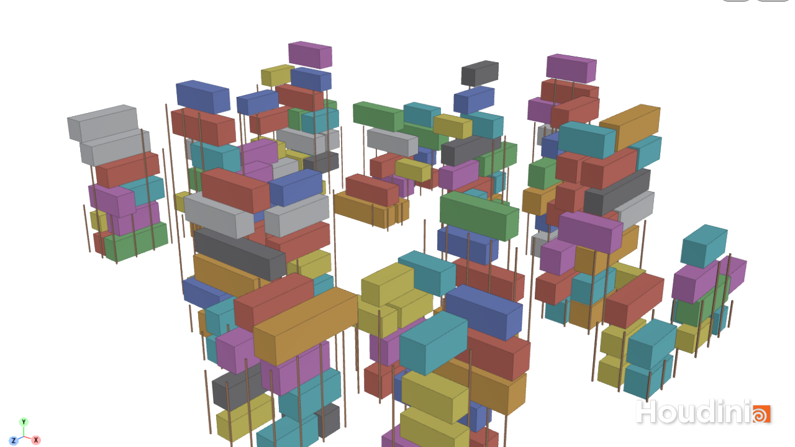
Pilares en el borde de cada torre, hasta la bandeja de la caravana más alta
Empieza la estructura metálica. Se eligió un sistema mixto: pilares continuos en el perímetro de cada torre, que es el andamio que se ve desde fuera, y más adelante una bandeja de rejilla bajo cada caravana, medio metro más ancha que ella, como en el libro. Los pilares nacen en el suelo y suben hasta la caravana más alta que tienen al lado. Si una caravana vuela por fuera de la torre, el pilar se detiene justo debajo y la sostiene. Salen 164 pilares en 18 torres.
Nota técnicaLos pilares no se dibujan: se deciden. Cada esquina de celda es un punto que mira sus cuatro celdas vecinas en la rejilla de ocupación del apilado. Si está en el borde de una torre y tiene caravanas encima, es pilar, y su altura es el piso más alto ocupado. Después, una sola línea vertical se copia a esos puntos y se estira con su altura. Una comprobación contra la caja real de cada caravana encontró siete roces con los escalones de las puertas; separar los pilares 30 cm del borde los dejó en cero.
+2 sliders164 pilares1.656 m de pilar0 roces1,7 ms
Fase 2 · bloque 6 · cierre22 oct 2026
Dibujar la plaza, trazar calles y pintar dónde crece el parque
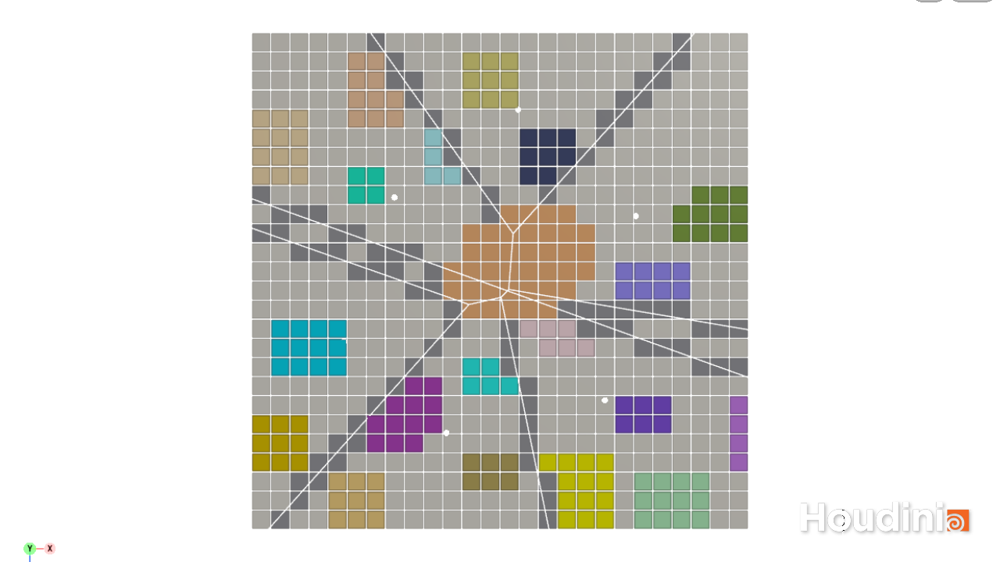
Planta con las entradas: plaza dibujada, avenida diagonal y un vacío pintado (arriba a la derecha)
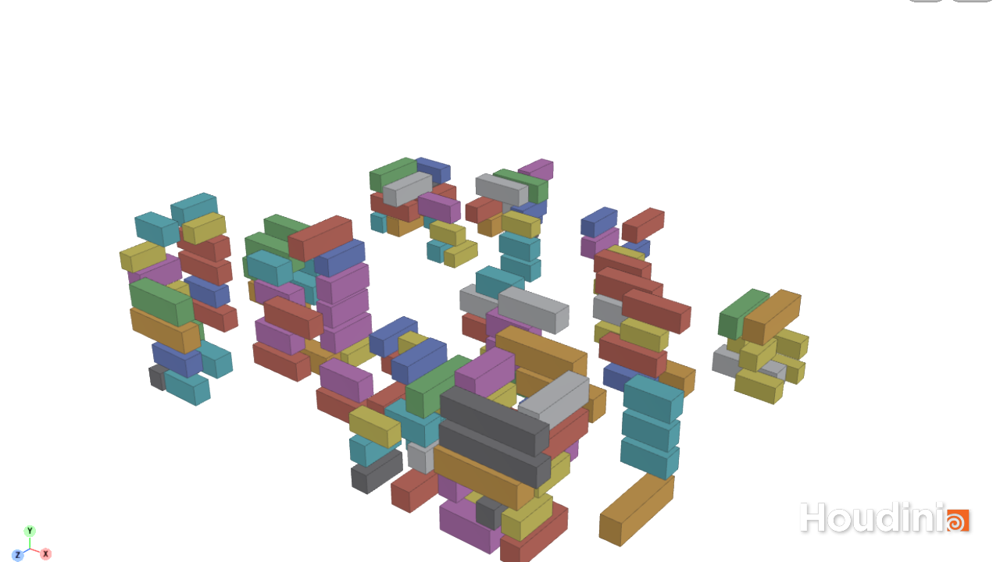
La máscara de altura baja las torres del sur y la de densidad abre un hueco
El parque ya no depende solo de los sliders: se puede dirigir a mano. Una curva cerrada sustituye a la plaza redonda, unas curvas trazan calles nuevas sobre los callejones, y dos máscaras pintadas sobre el solar deciden dónde suben más las torres y dónde no se construye. Todo es opcional: con las entradas apagadas, el parque es exactamente el procedural de siempre, caravana por caravana. Con esto se cierra la fase 2.
Nota técnicaDesde el primer bloque, las calles y la plaza eran curvas medidas con xyzdist, no celdas pintadas. Gracias a eso, añadir las entradas no tocó la lógica: un Switch elige entre la curva procedural y la del usuario, y el resto de la red no se entera. Las máscaras viajan como atributos: la de altura multiplica la altura objetivo de cada torre y la de densidad se convierte en el atributo de densidad del Scatter que reparte las torres. Para comprobar que las entradas apagadas no cambian nada, se compararon los dos parques unidad por unidad.
+9 controles3 entradas opcionales0 cambios con todo apagado78 ms el parque
Fase 2 · bloque 522 oct 2026
162 casas con nombre, color y óxido
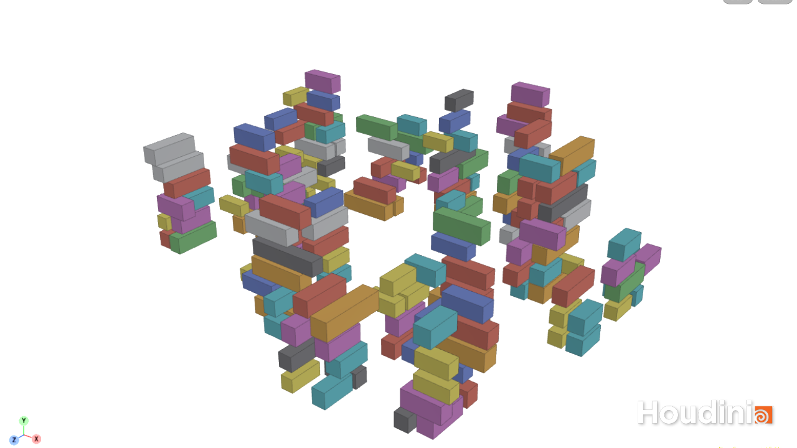
Por tipo: rojo la clásica, plata la Airstream, naranja la mobile home, gris los contenedores…
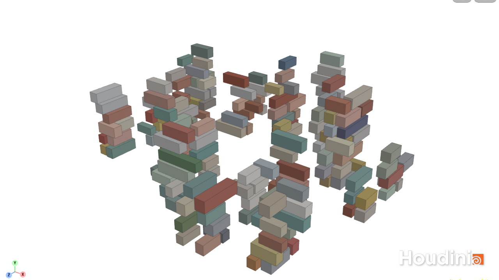
Con pintura y óxido: la paleta vintage desvaída que leerá el material en la fase 7
Cada caravana del parque ya sabe qué es y cómo es. Tiene su pieza concreta de la biblioteca, el color de su chapa (de una paleta de ocho colores vintage que se edita con una rampa), su nivel de óxido y qué equipamiento llevará: aire acondicionado, paneles solares, caja tech o parabólica. Los paneles solo van donde el techo queda libre. Un selector de vista cambia entre puntos, cajas por tipo y cajas con pintura. Con esto se cumple el objetivo de la fase 2: el parque entero se calcula en una décima de segundo y se puede rehacer con cualquier slider.
Nota técnicaCada sistema tiene su propia semilla, combinada con el identificador estable de la unidad, nunca con su número de punto. Se comprobó comparando unidad por unidad: cambiar la semilla del color repinta el parque sin mover una sola caravana ni tocar su equipamiento, y cambiar la del equipamiento solo cambia el equipamiento. El color no se guarda en la geometría: viaja como atributo de cada punto, y el material de Karma lo leerá como primvar. Así 162 caravanas distintas siguen siendo 32 mallas en memoria.
+20 sliders162 unidades3 pestañas nuevas100 ms todo el parque
Fase 2 · bloque 422 oct 2026
Un dial de caos: de pilas ordenadas a The Stacks
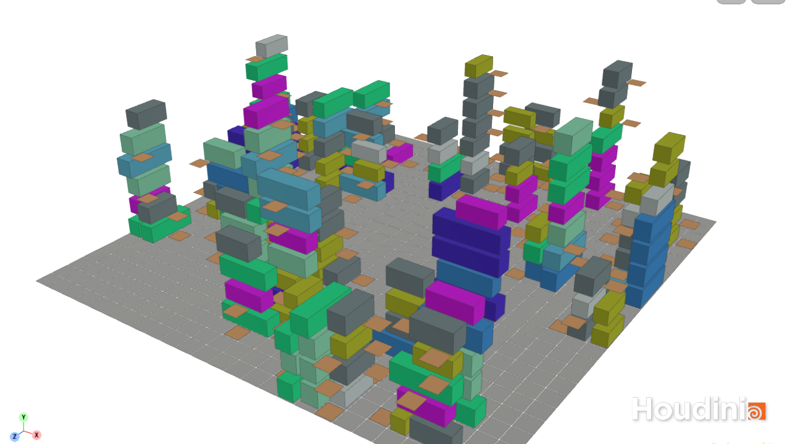
Caos 0: pilas ordenadas, cada caravana sobre la de abajo
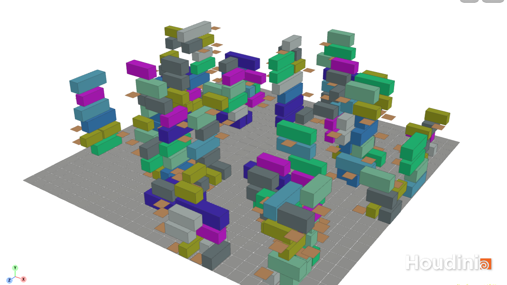
Caos 8 (por defecto): voladizos, cruces a 90° y huecos
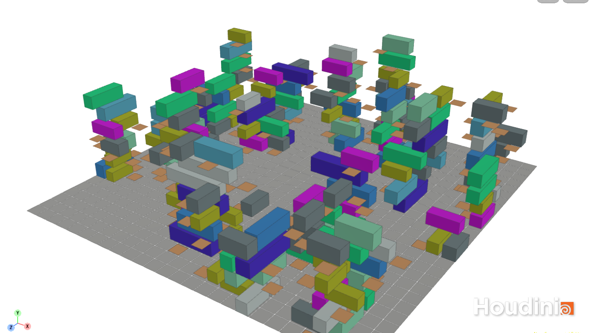
Caos 10: un 25 % más de todo
Un solo slider, el caos, controla lo desordenado que es el parque. Con 0 las caravanas se apilan como cajas en un almacén. Con 8, el valor elegido para el proyecto, una de cada dos piezas vuela por encima del vacío, muchas se cruzan a 90° con la de abajo y quedan huecos en mitad de las torres. Las reglas siguen mandando: nada se solapa, toda unidad conserva al menos un apoyo, nunca se vuela sobre la plaza ni sobre otra torre, y la puerta sigue teniendo su sitio. Además, las torres dejan de ser pirámides: los pisos altos tienen casi el doble de unidades que antes.
Nota técnicaEl maestro no tiene lógica propia: multiplica las tres probabilidades (cruce, voladizo y hueco) por caos/8, así que 8 deja los sliders tal cual y 0 los anula. Para el cruce, la rejilla guarda en cada celda el eje de la caravana que la ocupa. Cada posición posible se compara con lo que tiene debajo y recibe un peso, y la posición final sale de una ruleta ponderada. Un script de comprobación recorre la rejilla tras cada cambio y cuenta lo que no debería existir: solapes, piezas sin apoyo y voladizos de más. Salió cero en todos los casos.
+5 sliders179 unidades75 con voladizo82 huecos86 ms los 8 pisos
Fase 2 · bloque 322 oct 2026
Primer apilado: 156 caravanas, sin solapes y con sitio para la puerta
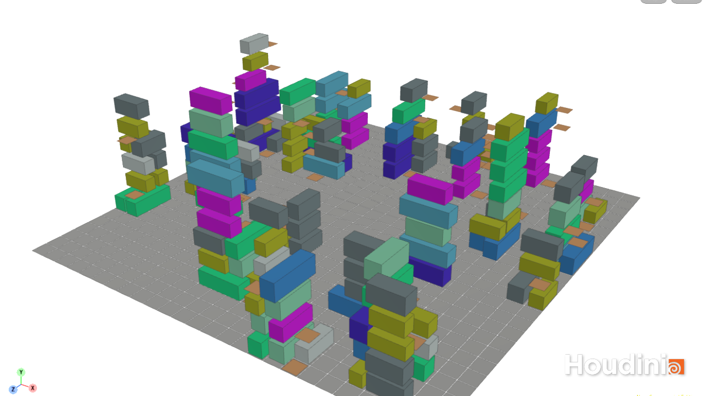
Una caja del tamaño real por unidad, coloreada por tipo; en naranja, el sitio reservado delante de cada puerta
Las torres se llenan. Cada piso se rellena con caravanas y algún contenedor, con su tamaño real y girados a 0°, 90°, 180° o 270°. Las reglas son pocas y estrictas: nada se solapa, toda unidad apoya sobre otra o sobre el suelo, y delante de cada puerta queda una celda libre o el vacío, donde irá la pasarela. Por defecto salen 156 unidades de los ocho tipos. Las torres todavía adelgazan hacia arriba porque aún no hay voladizos; eso llega en el bloque siguiente.
Nota técnicaEl apilado es un bucle for-each con feedback: cada vuelta rellena un piso y devuelve la rejilla entera a la siguiente, así que cada piso sabe exactamente qué quedó ocupado debajo. La primera versión iba celda por celda y probaba piezas, y en torres estrechas ganaban siempre las pequeñas: 157 de 187 unidades eran cápsulas o casetas. La versión buena le da la vuelta: elige primero la caravana y luego busca todos los sitios del piso donde cabe. La comprobación final cuadra: las celdas ocupadas suman exactamente el largo de todas las unidades.
+2 sliders156 unidades8 tipos + contenedores0 solapes46 ms los 8 pisos
Fase 2 · bloque 222 oct 2026
Dónde va cada torre y hasta dónde sube
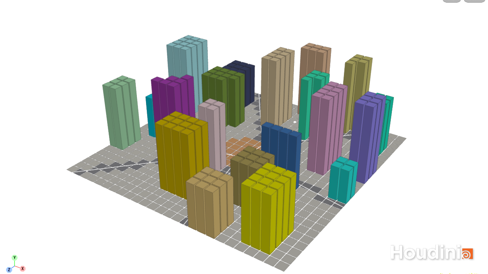
Maqueta: cada torre levantada hasta su altura objetivo
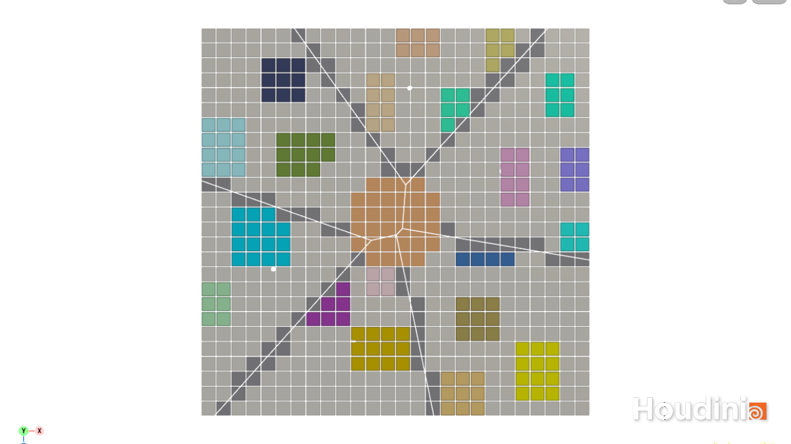
En planta: huellas de torre, patios, callejones y plaza
Dentro de cada barrio aparecen las torres. Se reparten unos puntos por el suelo edificable, cada uno con su rectángulo de 2 a 4 celdas de lado y su altura objetivo, de 3 a 8 pisos. Entre torres vecinas queda siempre un hueco, y lo que no es torre queda como patio: el sitio para contenedores, puestos y basura de las fases siguientes. Por defecto salen 20 torres sobre 157 celdas, suficiente para unas 170 caravanas.
Nota técnicaEl mismo truco del bloque anterior, un nivel más abajo. Las semillas de torre pasan por un Voronoi, y cada celda toma los datos de la semilla más cercana con un Attribute Transfer. Una sola expresión de grupo decide si la celda es torre: tiene que estar dentro del rectángulo, en el mismo barrio que su semilla y lejos de la frontera con la torre vecina. Los recortes dejaban fragmentos de una celda donde no cabe ninguna caravana, así que otra expresión cuenta las celdas de cada torre con findattribvalcount y descarta las que no llegan al mínimo.
+8 sliders20 torres157 celdas de torre870 celdas·piso
Fase 2 · bloque 122 oct 2026
El solar: una plaza, seis barrios y los callejones entre ellos
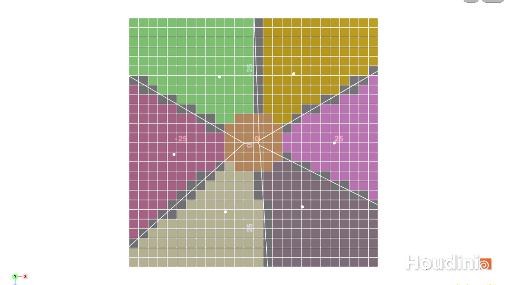
Vista cenital: la plaza en naranja, un color por cluster y los callejones en gris
Empieza el parque. El solar es una rejilla de celdas de 3 × 3 m (26 × 26 por defecto, 78 m de lado), y cada celda es un punto que sabe dónde está y a qué zona pertenece: plaza, calle o suelo edificable. Alrededor de la plaza se reparten seis centros de cluster en anillo, girados y desordenados por la semilla. Cada celda pertenece al centro más cercano, y en la frontera entre dos clusters nace un callejón. Para ser fiel al libro, donde el suelo son franjas estrechas de barro entre torres, la plaza es solo un claro de 9 m de radio y los callejones miden 3 m. De 676 celdas, 577 quedan edificables, 67 son callejón y 32 son plaza.
Nota técnicaLas calles no son celdas pintadas, sino curvas de verdad. Los centros pasan por voronoiadjacency y voronoisplit, que parten el solar en regiones, y los bordes de esas regiones se convierten en líneas. Cada celda mide su distancia a esas líneas con xyzdist: si está a menos de medio ancho de callejón, es callejón. La plaza usa la misma prueba contra un polígono. Así, cuando se pueda dibujar la plaza o las calles a mano, bastará con cambiar la curva de entrada: el resto de la red no se entera.
+7 sliders676 celdas6 clusterscallejones de 3 m
Fase 1b · cierre21 oct 2026
El kit completo: 121 piezas listas para construir el parque
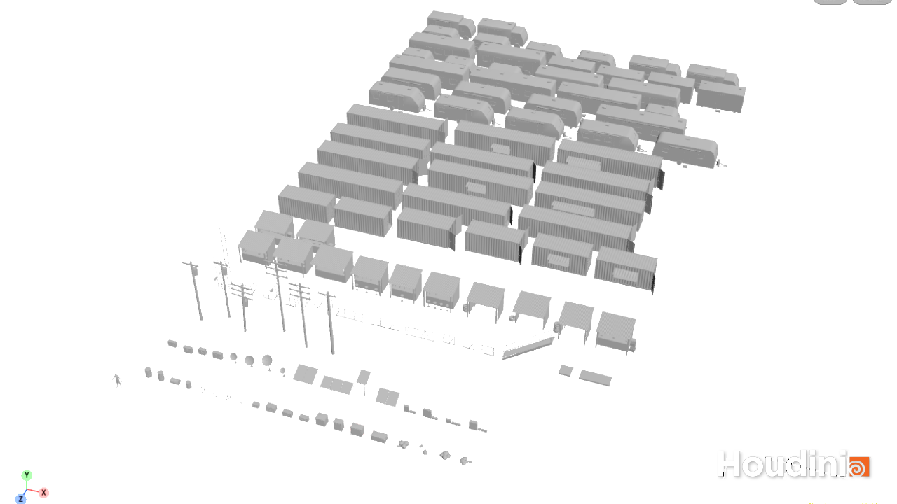
Las siete familias: de lo pequeño (delante) a las caravanas (al fondo)
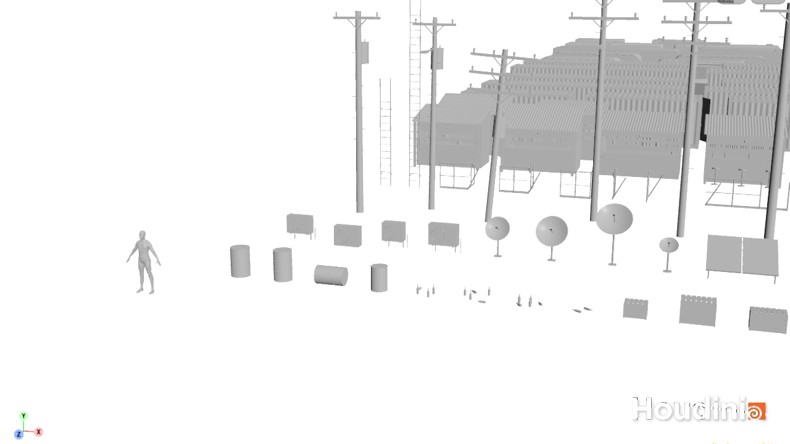
Las primeras filas junto a la figura de 1,8 m
Con la hoja final se cierra la fase 1b: todo el kit del parque, a escala y en una sola vista. Son 32 caravanas, 12 puestos, 18 contenedores, 16 piezas de equipamiento, 17 de circulación, 20 props de clutter y 6 postes eléctricos. Cada familia sale de su propio generador procedural y se hornea a disco como un pool de variantes empaquetadas, con su tamaño real y sus puntos de anclaje. La siguiente fase deja de modelar piezas y empieza a construir el parque: plaza, clusters de torres y apilado.
Nota técnicaLa hoja no está colocada a mano. Un único wrangle recorre las 121 piezas, lee el bounding box de cada una, deduce su familia por el nombre y las coloca en filas de 48 m como máximo, con lo pequeño delante y lo grande al fondo. No crea geometría: solo mueve el punto de cada instancia. Es, a escala de catálogo, lo mismo que hará el parque, que trabaja con nubes de puntos e instancias del pool.
121 piezas7 familias221 sliders46,5 × 78 m de hoja
Fase 1b · poste eléctrico · cierre21 oct 2026
Seis postes y todas las familias del kit
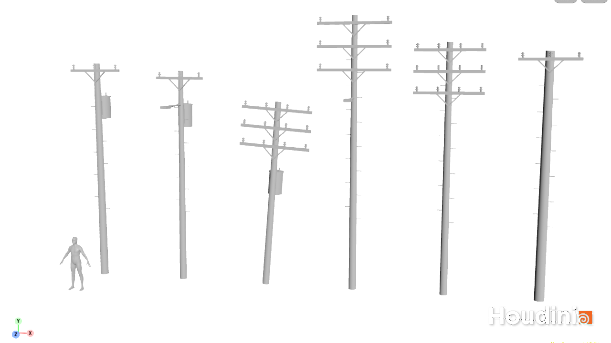
Seis postes de 6,3 a 9 m: madera o metal, de una a tres crucetas, con transformador o farola
El poste se hornea en seis versiones: de madera o metálico, rectos o algo inclinados, de una a tres crucetas, con o sin transformador y alguno con farola. Cada poste guarda también sus puntos de anclaje, de 3 a 12 para los cables entre postes y uno para la acometida a las casas. Con esto, las siete familias del kit están en la biblioteca, que suma 121 piezas. Solo queda la hoja final a escala para cerrar la fase.
Nota técnicaLas variaciones al azar llevan límites. Con tres crucetas, la separación se recorta para que la más baja nunca baje de 3 m bajo la punta, porque una cruceta a la altura de la cabeza no tendría sentido. Y, como en el resto del kit, lo que no puede faltar se fija: una versión siempre lleva farola, otra siempre es metálica y otra siempre tiene tres crucetas.
+2 sliders6 posteshorneado en 26 ms121 piezas en la biblioteca
Fase 1b · poste eléctrico21 oct 2026
El poste que llevará los cables
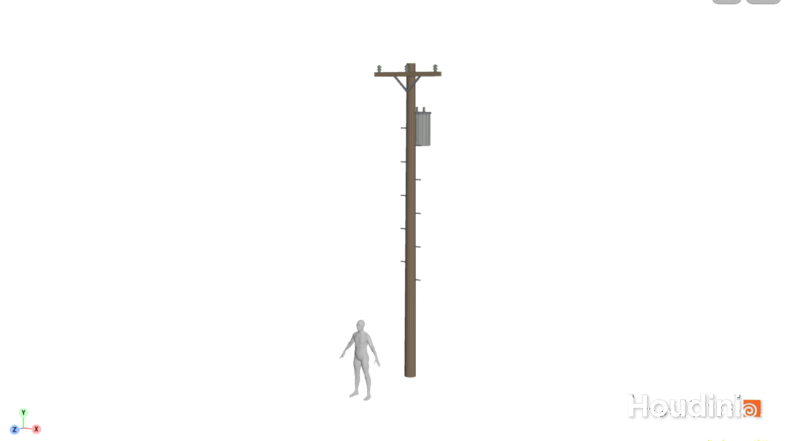
Por defecto: 7,5 m, una cruceta con tres aisladores y transformador
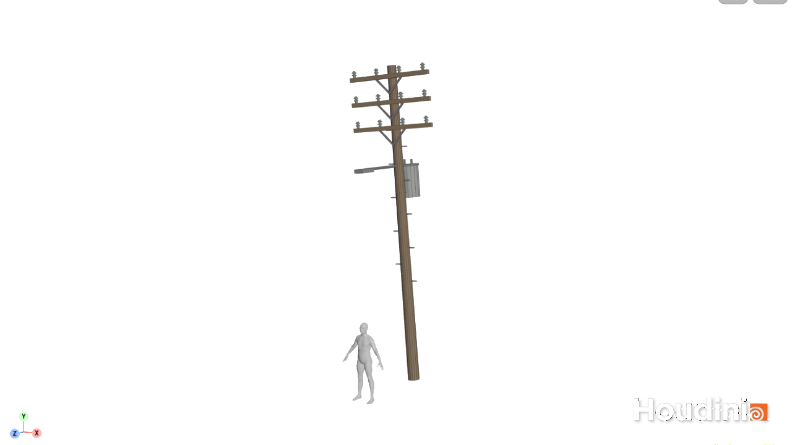
Variante: tres crucetas, farola y 5° de inclinación
La última familia del kit es el poste eléctrico del suelo: de madera o metálico, de 4 a 12 m, con una a tres crucetas, aisladores, peldaños alternos para subir, un transformador colgado detrás y, opcionalmente, una farola. Se puede inclinar unos grados, porque en el parque nada está del todo recto. El poste no es solo decorado: publica puntos de anclaje encima de cada aislador y otro para la acometida a las casas, que es donde se engancharán los cables.
Nota técnicaCada cruceta se modela una sola vez con sus jabalcones y sus aisladores, y se copia a una línea de puntos que baja desde la punta del poste. Los anclajes de los cables usan exactamente esos mismos puntos, desplazados a la cabeza del aislador, así que siempre coinciden con la geometría, haya una cruceta o tres. La inclinación se aplica al final a la vez al poste y a los anclajes, con el mismo giro.
+13 sliders440 polígonos4 anclajes por defecto1 grupo nuevo: insulator
Fase 1b · clutter · caja tech en el pool21 oct 2026
Veinte props: las cajas tech entran en la biblioteca
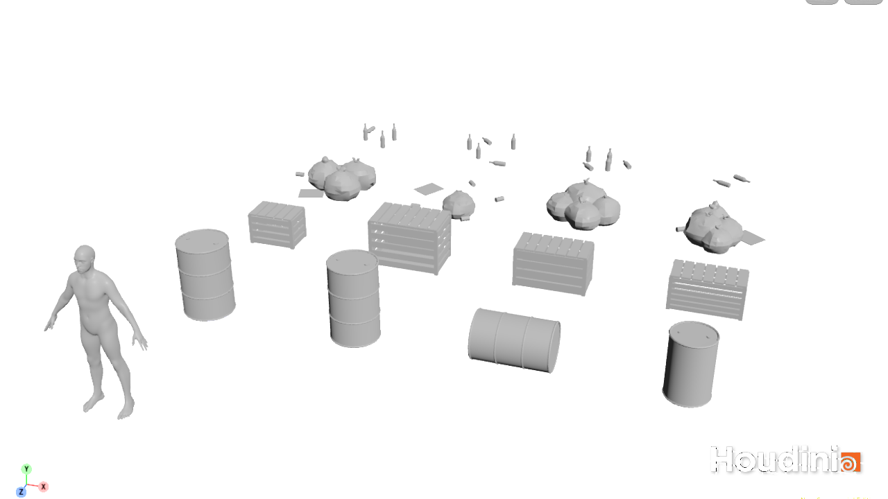
Cinco filas: bidones, cajas, basura, botellas y, al fondo, cuatro cajas tech
La caja tech se hornea con cuatro versiones: la de referencia, una más alta, una más ancha y una larga y baja tipo flight case. Cada una cambia también el tamaño de los cantoneros, el chaflán de la puerta y si lleva puerta lateral y asas. La biblioteca suma ya 115 piezas.
Nota técnicaAñadir un tipo nuevo al pool no altera los que ya existían: la semilla de cada pieza sale solo de su tipo y su número, así que las 16 piezas anteriores se vuelven a hornear idénticas, polígono a polígono. Es lo que permite ampliar la biblioteca a mitad de proyecto sin que el parque cambie solo.
20 subvarianteshorneado en 0,07 s115 piezas en la biblioteca
Fase 1b · clutter · caja tech21 oct 2026
Una caja de carga con cantoneros
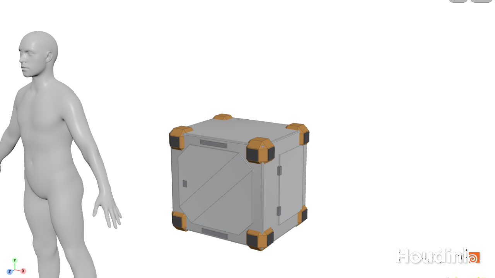
Caja tech junto a la figura de 1,8 m
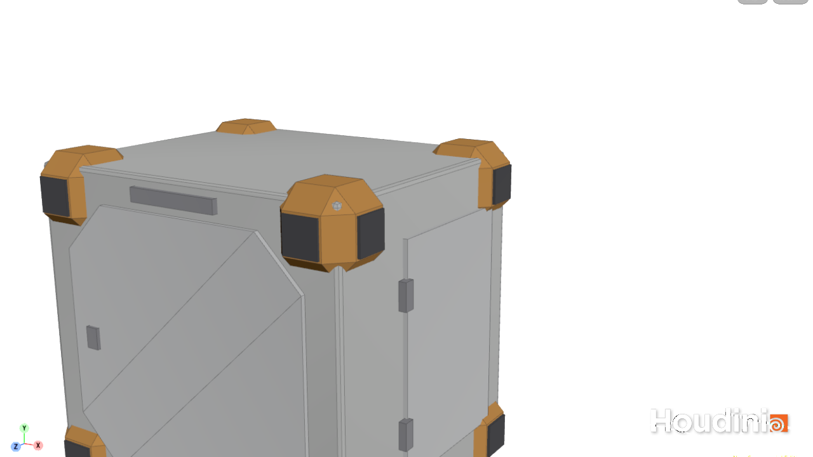
Cantoneros achaflanados, puerta con chaflán y bisagras laterales
A partir de una imagen de referencia se añade un quinto tipo de prop: una caja de carga de aire tecnológico, con la carcasa clara, protectores naranjas en las ocho esquinas, una puerta frontal con las esquinas achaflanadas, otra puerta en el lateral con sus bisagras, cierre y asas. Medidas, tamaño de los cantoneros, chaflán de la puerta, puerta lateral y asas son sliders.
Nota técnicaLos ocho cantoneros son un solo modelo: un cubo con las aristas achaflanadas y dos insertos, colocado en una esquina y reflejado tres veces (en altura, en ancho y en fondo). La puerta frontal es un único polígono al que se le biselan los cuatro vértices para achaflanarlo y luego se extruye. Hubo que girar ese polígono 180°, porque su normal miraba hacia dentro y la puerta se hundía en la carcasa.
+7 sliders405 polígonos0,96 × 0,90 × 0,81 m
Fase 1b · clutter · cierre21 oct 2026
Dieciséis props para ensuciar el parque
Una fila por tipo: bidones, cajas, basura y botellas, junto a la figura de 1,8 m (la fila del fondo, las cajas tech, llegó después)
El clutter entra en la biblioteca con cuatro versiones de cada tipo. Hay bidones de pie, tumbados y uno más pequeño; cajas de distintos tamaños, cerradas o con huecos y con o sin tapa; montones de una a cinco bolsas con restos alrededor, y grupos de botellas con más o menos caídas. La biblioteca suma ya 111 piezas: solo falta el poste eléctrico para cerrar el kit.
Nota técnicaEn los montones de basura y de botellas, variar la pieza es sobre todo cambiar la semilla. El mismo generador reparte otra vez los puntos, los giros y qué botellas caen, así que cada subvariante es un montón distinto sin una sola regla nueva. Lo que el azar podría no dar se fija a mano: una versión del bidón siempre va tumbada y otra siempre es pequeña.
+2 sliders16 subvarianteshorneado en 0,1 s111 piezas en la biblioteca
Fase 1b · clutter21 oct 2026
Bidones, cajas, bolsas de basura y botellas
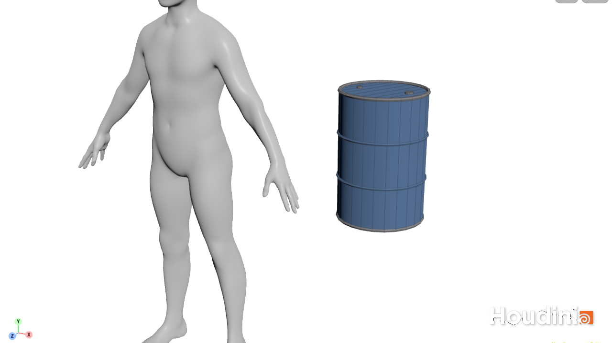
Bidón de 200 l: 0,88 m, a la altura de la caderaCaja de listones con tapaMontón de bolsas con restos sueltos
Los objetos pequeños que darán vida a pasarelas y calles salen de un único generador con cuatro tipos. Hay un bidón metálico de pie o tumbado, una caja de listones de madera (con o sin tapa y con huecos regulables), un montón de bolsas de basura con latas y cartones alrededor, y un grupo de botellas, unas de pie y otras caídas. Todos apoyan en el suelo y tienen el pivote en el centro de su base, como el resto del kit.
Nota técnicaLa basura y las botellas son montones, no piezas sueltas. Un Scatter con relajación reparte los puntos dentro de un disco y un Attribute Randomize les da tamaño y giro. Una expresión de grupo decide, con la semilla, qué botellas están caídas, y cada grupo de puntos recibe su propia versión de la botella. El ruido de las bolsas (Mountain) se aplica después de copiarlas, en espacio de mundo, así que ninguna bolsa sale igual que otra. Al final, un Match Size recentra el montón en XZ, porque el scatter puede dejarlo descentrado.
El kit en acción: una L y una T montadas con piezas
Una L y una T montadas solo con piezas del pool, junto a la figura de 1,8 m
Las 17 piezas del kit de circulación se hornean a la biblioteca: pasarelas rectas y de cruce, las cuatro barandillas (recta, en L, en T y remate) intactas y rotas, una escalera de un piso y escaleras de mano de uno y dos pisos. Para probarlas se montan una L y una T solo con una lista de colocación: cada línea dice qué pieza va, dónde y con qué giro. Las barandillas caen en su sitio, las esquinas se cierran y los cruces quedan abiertos donde llega otra pasarela. La biblioteca suma ya 95 piezas.
Nota técnicaLa prueba es exactamente lo que hará el parque: una nube de puntos con dos atributos, el nombre de la pieza y un cuaternión de giro, y un Copy to Points que coloca la pieza del pool en cada punto. Como todas las piezas comparten el mismo marco de casilla, componer una pasarela es decidir nombres y giros de 90°, sin calcular un solo desplazamiento.
+2 sliders17 piezas30 colocadas en la prueba95 en la biblioteca
Fase 1b · circulación · kit21 oct 2026
Un kit de pasarelas con esquinas
Barandilla en L, rota: un solo poste en la esquinaBarandilla de cruce en T, rota
Las barandillas tienen que seguir cómo se coloquen las caravanas, así que la circulación pasa a ser un kit que encaja en la rejilla. Hay casillas de pasarela rectas y de esquina o cruce, y barandillas rectas, en L, de cruce en T y de remate para los extremos que dan al vacío, cada una intacta o rota. Todas comparten el mismo marco de referencia: el lado exterior de la casilla siempre es el mismo, así que al montar las torres basta con colocar la casilla y su barandilla con el mismo giro.
Nota técnicaLa barandilla ya no es un tramo fijo: es una línea de lados que se remuestrea en tramos iguales. Los postes salen en cada punto y se fusionan en la esquina, para que haya uno solo. Los pasamanos son un PolyWire sobre cada tramo y el rodapié un Sweep que dobla la esquina. La rotura elige con la semilla un tramo y un poste de esa misma línea, así que la L rota queda tan coherente como la recta.
Escalera de un piso: 20 contrahuellas de 18 cmBarandilla rota: tramo caído y poste dobladoEscalera de mano con asidero de 1 m
Las piezas para moverse por las torres salen de un mismo generador: tramos de pasarela de rejilla del tamaño de una celda, barandillas de tubo, escaleras metálicas que salvan un piso entero y escaleras de mano verticales. Las barandillas pueden estar intactas o rotas: falta un tramo, cuelga un trozo de pasamanos y hay un poste doblado, y todo cambia con una semilla. Todas las piezas comparten una regla: la cota cero es la superficie de pisar, así que encajan en los forjados sin cálculos.
Nota técnicaLa escalera se dimensiona sola: a partir de la altura a salvar calcula el número de contrahuellas para que midan unos 18 cm, y con una huella de 25 cm salen el desarrollo y el ángulo de las zancas. La barandilla rota no es un modelo aparte: dos expresiones de grupo eligen, con la semilla, qué poste se dobla y qué tramo se cae, sobre los mismos puntos que construyen la barandilla intacta.
+18 sliders4 piezas + estado rotode 48 a 210 polígonos
Fase 1b · equipamiento · cierre21 oct 2026
Dieciséis piezas de equipamiento
Una fila por tipo: aire acondicionado, solar, caja tech y parabólica
El equipamiento se hornea como el resto: cuatro versiones de cada tipo, con distinto tamaño y montaje. Hay aires acondicionados con y sin escuadras, paneles en filas de uno a tres o en lo alto de un mástil, armarios de electrónica con más o menos antenas y baterías, y parabólicas de medio metro a más de uno. La biblioteca suma ya 78 piezas listas para instanciar.
Nota técnicaEl azar no siempre reparte bien: con la semilla de partida, ningún panel salió en mástil y el pool perdía ese montaje. La solución es mezclar azar y reglas: la tercera versión del panel solar siempre va en mástil y las demás lo deciden con una probabilidad baja. Así el pool tiene variedad garantizada sin dejar de ser determinista.
+2 sliders16 subvariantes64 KB en disco78 piezas en la biblioteca
Fase 1b · equipamiento21 oct 2026
Lo tecnológico: aire acondicionado, solares, electrónica y parabólicas
Aire acondicionado con escuadras de paredPaneles solares sobre bastidorCaja tech: armario, antena y bateríasParabólica con perfil parabólico real
El "pobre pero tecnológico" del parque sale de cuatro piezas, todas en el mismo generador: la unidad exterior de un aire acondicionado, con su ventilador, sus lamas y sus escuadras; paneles solares en fila sobre bastidor o en lo alto de un mástil; un armario de electrónica con antenas de varilla, un LED de estado y baterías en el suelo; y una antena parabólica que se puede orientar. Todas comparten una convención de montaje: las de fachada tienen la pared en un plano fijo y las de techo apoyan en el suelo, así que más adelante bastará con alinearlas con los anclajes de cada caravana.
Nota técnicaLa parabólica es una parábola de verdad: cinco puntos con y = r² / 4f, girados con Revolve, y el cabezal colocado exactamente en el foco. Los paneles solares calculan la altura de cada pata con el seno y el coseno de la inclinación, así que el bastidor siempre toca el panel aunque cambie el ángulo. Al construir el bloque se escaparon dos nodos sin entrada; solo dieron error al mostrar su rama, así que ahora cada generador se prueba rama por rama.
+21 sliders4 tiposde 80 a 282 polígonos
Fase 1b · contenedor · cierre21 oct 2026
Dieciocho contenedores en la biblioteca
Filas: 20, 40 y 40 pies high cube. Columnas: almacén, abierto y kiosco, dos de cada
El contenedor queda cerrado como asset: un botón cruza los tres tamaños con las tres variantes y hornea dos versiones de cada combinación. La segunda versión nunca repite la primera: el almacén deja una puerta entornada, el abierto cambia los ángulos de las hojas y el kiosco mueve y redimensiona la ventana. Son 18 piezas empaquetadas en la biblioteca, que ya suma 62 entre caravanas, puestos y contenedores.
Nota técnicaEl índice que acompaña al pool guarda el tamaño real de cada pieza, no el nominal: un contenedor de 2,44 m de ancho ocupa 4,3 m con las puertas abiertas y 3,4 m con el mostrador del kiosco. El apilado y la plaza leerán ese tamaño para no meter un contenedor abierto donde solo cabe uno cerrado. Además, el horneado respeta las expresiones del generador: largo y alto siguen saliendo del menú de tamaño después de hornear.
+2 sliders18 subvarianteshorneado en 0,14 s240 KB en disco
Fase 1b · contenedor21 oct 2026
Tres maneras de usar un contenedor
Variante Abierto: puertas abiertas e interior a la vista
El contenedor tiene ya tres variantes con nombre, elegibles desde un menú: Almacén, cerrado; Abierto, con las dos puertas de par en par; y Kiosco, con la ventana recortada, el portón y el mostrador. Cada variante solo cambia las aperturas, así que se combina con cualquier tamaño: 20 o 40 pies, estándar o high cube.
Nota técnicaEl menú no tiene geometría propia: escribe un puñado de sliders que ya existían y después se pueden retocar a mano. Es el mismo patrón de presets que las caravanas y los puestos, y será el que use el horneado del pool para cruzar variantes y tamaños.
+1 slider3 variantes × 4 tamaños
Fase 1b · contenedor abierto21 oct 2026
El contenedor se abre: puertas y kiosco
Kiosco: hueco recortado, portón de chapa como tejadillo y mostradorPuertas abiertas, cada una con su ángulo
El contenedor deja de ser solo almacén. Cada hoja de puerta gira sobre su bisagra con su propio ángulo, con las barras de cierre incluidas, y deja ver el interior. En el lateral se puede recortar un hueco rectangular de tamaño y posición libres: la chapa que se recorta se convierte en un portón abatible que hace de tejadillo, y debajo aparece un mostrador de madera sobre escuadras. Es el kiosco clásico hecho con un contenedor, perfecto para la plaza.
Nota técnicaEl hueco se abre con un Boolean que trata la chapa como superficie abierta y no como sólido, así que corta limpio sin cerrar nada. El portón no es el trozo cortado sino una rejilla nueva del tamaño del hueco, pero como la greca se calcula con la posición en el contenedor, sale exactamente en fase con el lateral: con el portón cerrado, el hueco desaparece sin dejar costura. Con todas las aperturas a cero, el contenedor es idéntico al de almacén, polígono a polígono.
+9 slidersabierto: 975 polígonoscerrado: 829, sin cambios
Fase 1b · contenedor21 oct 2026
Contenedor marítimo de 20 y 40 pies
20 pies estándar, puertas con barras de cierre40 pies high cube con el mismo generador
El contenedor es un generador con medidas ISO reales: un menú cambia entre 20 y 40 pies y un interruptor lo convierte en high cube. Tiene chapa grecada en laterales, testero y techo, bastidor con postes y carriles, cantoneras en las ocho esquinas y dos puertas con sus barras de cierre. Como el resto del kit, publica anclajes en el techo, en los laterales y delante de las puertas.
Nota técnicaLa greca trapezoidal sale de una sola expresión: un seno multiplicado y recortado con clamp, que aplana crestas y valles. Las mismas tres rejillas sirven para laterales, testero y techo, giradas para que su normal mire hacia fuera. Para evitar parpadeos en el render, cada capa entra unos milímetros respecto a la anterior: las cantoneras marcan el borde exterior, los postes entran 5 mm, los carriles 1 cm y la chapa algo más. Así nunca hay dos caras en el mismo plano.
+8 sliders20': 829 polígonos40' HC: 1.354 polígonos6,06 / 12,19 m
Fase 1b · bloque 321 oct 2026
Doce puestos listos para la plaza
Una fila por oficio (tienda, bar, taller, electrónica) y tres subvariantes por fila
Los puestos siguen el mismo camino que las caravanas: un botón recorre los cuatro oficios y hornea tres versiones de cada uno. Cada versión cambia el ancho, el fondo, la altura, el dintel y el volado del tejadillo, quita o pone los postes y la bombilla, y reordena el género. Las doce piezas quedan empaquetadas por nombre en la biblioteca, junto a las 32 caravanas, con sus puntos de anclaje y su tamaño real.
Nota técnicaEl horneado no parte de unas medidas fijas, sino de la carcasa tal como esté en el generador en ese momento. Si se retoca el puesto a mano y se vuelve a hornear, las doce variantes heredan el cambio y conservan su variación propia, porque cada una tiene su semilla. Las variaciones están acotadas: el tejadillo nunca invierte su pendiente y el género se queda dentro de la carcasa.
+2 sliders12 subvarianteshorneado en 0,1 s314 KB en disco
Fase 1b · bloque 221 oct 2026
Cuatro oficios, una carcasa: tienda, bar, taller y electrónica
Tienda · baldas de cajas y latasBar · botellas y taburetes en la barraTaller · banco, panel de herramientas y neumáticosElectrónica · aparatos y una pila de televisores
La carcasa de chapa se llena según el oficio. Un menú elige el tipo de puesto y escribe solo el relleno: baldas con cajas, botellas o aparatos, género sobre el mostrador, taburetes, un banco con panel de herramientas, neumáticos o televisores apilados y una bombilla colgada bajo el volado. Las medidas de la carcasa no se tocan, así que cualquier puesto puede ser cualquier oficio. Además, el puesto publica sus puntos de anclaje: techo para paneles o parabólicas, fachada para el aire acondicionado y un punto de acceso a pie de calle.
Nota técnicaTodo el género sale de una sola nube de puntos: una fila por balda más otra sobre el mostrador. Un valor aleatorio por punto decide qué huecos quedan vacíos, otro el tamaño y otro un pequeño giro en planta, y Copy to Points coloca encima la pieza del género elegido. Con una semilla nueva la estantería se reordena sola, y como las baldas y el tejado derivan de las mismas medidas, el relleno sigue encajando aunque cambie la carcasa.
+18 sliders4 presets5 grupos de material nuevosde 622 a 1.978 polígonos
Fase 1b · bloque 120 oct 2026
El puesto de chapa: la carcasa
Carcasa con los valores por defecto, junto a la figura de 1,8 m
Empieza el resto del kit con los puestos de trabajo de la plaza. Todos comparten la misma carcasa: dos laterales de chapa, pared trasera, dintel, un mostrador de madera con tablero volado y un tejadillo de chapa ondulada que cae hacia la calle y se apoya en dos postes. Ancho, fondo, alturas, volados y la onda de la chapa son sliders. Los cuatro tipos de puesto (tienda, bar, taller y electrónica) se diferenciarán por lo que lleven dentro.
Nota técnicaToda la geometría cuelga de una sola regla: la línea del tejado, que va de la altura trasera a la delantera. Los laterales son un trapecio de cuatro puntos cuyas esquinas son expresiones, la chapa se inclina con el arcotangente de esa pendiente y los postes miden exactamente lo que marca la línea en su posición. Si se cambia cualquier altura o el fondo, todo vuelve a encajar sin huecos. La onda de la chapa es una sinusoide aplicada a una rejilla con ocho columnas por onda, con los valles apoyados en los muros.
+16 sliders444 puntos · 237 polígonos2,84 × 2,65 × 2,70 m
Fase 1a · bloque 9 · cierre20 oct 2026
El pool: 32 caravanas distintas listas para instanciar
Hoja de contactos: una fila por tipo, cuatro subvariantes por fila
El generador se convierte en una biblioteca. Con un botón, recorre los ocho tipos y saca cuatro versiones de cada uno: la original y tres variaciones con más o menos largo, otras ventanas, ruedas o calzos, con o sin toldo o franja, distinto número de bombonas. Las 32 se guardan en disco empaquetadas por nombre, junto con sus puntos de anclaje y un índice con el tamaño real de cada una. Con esto queda cerrada la fase 1a.
Nota técnicaEl pool se hornea a disco en lugar de generarse en vivo dentro del parque. Así el parque nunca recalcula el generador: solo lee 32 piezas empaquetadas y las instancia, y 160 caravanas cuestan en memoria lo que 32. Las variaciones usan una semilla por tipo y subvariante, así que cada horneado da exactamente el mismo resultado.
32 subvarianteshorneado en 0,8 s722 KB en disco
Fase 1a · bloque 8b20 oct 2026
Accesorios: bombonas, toldo, luces y ribete
v0 · bombonas en la lanza, toldo enrollado y ribeteTrasera con pilotos y ribete de aluminiov7 · faros en la cabina y toldo sobre la ventana de servicioRibete continuo (Sweep) en la esquina trasera
La segunda mitad del pase de detalle añade lo que hace que una caravana parezca vivida: bombonas de gas sobre la lanza, el toldo recogido encima de la puerta, pilotos traseros, faros en los que tienen motor y un ribete de aluminio que recorre el contorno de cada lateral. Cada tipo activa solo lo que le corresponde: la caseta de obra no tiene toldo ni pilotos, y el autobús no lleva bombonas.
Nota técnicaEl ribete no se dibuja a mano: se toma la cara lateral plana y se barre un tubo fino (Sweep) a lo largo de su borde, así que sigue la forma de cualquier tipo en una sola pieza continua. La primera versión, con PolyWire, se colaba por un detalle traicionero: las tiras del redondeo del techo heredaban el grupo del lateral y el ribete salía en 270 trozos. Seleccionar por la normal de la cara, y no por el grupo, lo resolvió y de paso redujo los polígonos casi a la mitad. El ribete inferior se interrumpe en los pasos de rueda.
+8 sliders3 grupos de material nuevos8 tipos sin errores
Fase 1a · bloque 8a20 oct 2026
Detalle medio: marcos, guardabarros y escalón
v0 · marcos que sobresalen y bloque de escalónv4 · guardabarros en los dos ejes
Primer pase de detalle que cambia la silueta. Las ventanas y la puerta tienen un marco que sobresale de la pared, los pasos de rueda llevan guardabarros en arco y delante de la puerta hay un bloque de escalón apoyado en el suelo. Todo funciona en los ocho tipos sin tocarlos uno a uno.
Nota técnicaLos marcos reutilizan los mismos puntos que recortan las ventanas: cada punto lleva una normal hacia fuera y Copy to Points orienta el marco con ella. Basta con poner la normal en un lado, porque el Mirror la invierte al reflejar. Si mañana cambia el número de ventanas, marcos y huecos siguen alineados.
+6 sliders0 caras no planasv0: 600 polígonos
Fase 1a · limpieza20 oct 2026
Superficies que parecían dobladas
Antes: el lateral plano se sombrea con degradadosDespués: sombreado plano y uniforme (las líneas son solo aristas)
Los recortes con Booleans dejaban los laterales como caras gigantes de hasta 73 vértices, sin normales y con alguna cara que no era plana del todo. El viewport las suavizaba con sus vecinas y parecían dobladas. Ahora, al final del generador, cada cara se divide en polígonos de cuatro lados como máximo y se le calculan normales con un ángulo de corte.
Nota técnicaNormales por vértice con ángulo de corte de 30°: si dos caras forman más de 30°, la arista se ve viva; si forman menos, se suaviza. Las paredes salen planas y los biseles redondos. Es la configuración estándar en hard-surface, y como va al final de la red, todo lo que se añada después hereda el arreglo sin tocar nada más.
0 caras no planasmáx. 4 vértices por cara+130 polígonos en la v0
Fase 1a · bloque 720 oct 2026
Techos redondeados: la Airstream por fin parece una Airstream
Vista trasera alta: aristas del techo y trasera redondeadasLado de la puertaCanned ham con un redondeo más sutil
Extruir un perfil lateral da cajas con las aristas largas vivas. Ahora el contorno alto de los laterales se redondea con un radio y una altura de inicio propios de cada tipo: casi todo en la Airstream, un toque suave en el autobús o el furgón, y nada en la caseta de obra, que debe verse recta.
Nota técnicaLo difícil fue elegir solo esas aristas. La solución: convertir cada lateral (una sola cara) en un grupo de aristas con Group Promote quedándose solo con su borde, y cruzarlo con una caja que empieza a la altura deseada. Dos intentos más simples fallaron (seleccionar por ángulo y promover dos grupos a la vez), y quedan anotados en el diario técnico para no repetirlos.
+3 sliders8 tipos sin erroresAirstream: 673 polígonos
Fase 1a · bloque 6b20 oct 2026
Una cabina de conductor para el food truck
v7 · lado de la puerta, con la ventana de servicioLado opuesto: cabina con parabrisas y ventanilla
El octavo tipo completa el catálogo: un furgón de reparto convertido en food truck, con una gran ventana de servicio, una cabina de conductor delante y dos ejes. La cabina es una pieza más del generador, así que cualquier otro tipo puede llevarla con un clic.
Nota técnicaLa cabina tiene su propio perfil lateral (capó y parabrisas inclinado) y se funde con la caja mediante un Boolean de unión. Para que la unión sea limpia, la cabina entra 5 cm en la caja, es 6 cm más estrecha y arranca 3 cm más arriba: así nunca hay dos caras exactamente en el mismo plano, que es el caso que más rompe un Boolean.
+11 sliders8 presets6,9 m con cabina
Fase 1a · bloque 6a20 oct 2026
Más tipos: caseta de obra, canned ham y autobús de dos ejes
v5 · caseta de obrav6 · canned ham, inclinada delante y detrásv4 · el autobús ya tiene eje delantero
El catálogo crece a siete tipos. Dos piezas nuevas en el generador lo hacen posible: una trasera que también puede inclinarse y redondearse (con ella la Airstream pasa a ser simétrica) y un segundo eje opcional con su propio paso de rueda. El octavo tipo, un furgón con cabina de conductor, llega en el próximo bloque.
Nota técnicaEl perfil pasó de 5 a 6 puntos. Cuando la trasera es recta, el punto nuevo queda en línea con sus vecinos y una expresión lo saca del grupo de bisel, así que los tipos que ya existían salen idénticos, comprobado con su bounding box. Añadir capacidad sin cambiar lo que ya funciona es la regla para que el pool no se rompa a mitad de proyecto.
+4 sliders7 presetsde 4,5 a 11 m
Fase 1a · bloque 520 oct 2026
Un generador, cinco caravanas
v1 · aluminio redondeada (Airstream)v2 · mobile home sobre calzosv3 · cápsula pequeñav4 · autobús reconvertido
Los cinco tipos de caravana salen del mismo generador. Un menú "Tipo" carga un preset de unos 30 valores (perfil, chasis, ventanas, puerta, franja, techo) y después cada slider se puede seguir retocando a mano. El mobile home pierde la lanza y las ruedas, y el autobús cambia el frontal inclinado por un parabrisas casi vertical.
Nota técnicaUn solo generador en vez de cinco redes: cualquier mejora (un marco de ventana, un remache) llega a todos los tipos a la vez. Además, los radios de las esquinas se limitan solos con min() según la longitud de cada tramo del perfil, así que ningún valor, ni a mano ni aleatorio, puede cruzar el bisel. Es lo que permitirá aleatorizar el pool sin romper geometría.
+2 sliders5 presetsde 4,5 a 11 m de largo
Fase 1a · bloque 420 oct 2026
Franja, ventana frontal, claraboyas y anclajes
Lado de la puerta, con colores de previsualización por grupoLado opuesto: tres ventanas y paso de rueda
La caravana clásica ya se lee como la del concept: carrocería clara con una franja que la rodea, ventana en el frontal inclinado y claraboyas en el techo. Además publica puntos de anclaje (techo, fachada y puerta) con su normal, donde más adelante se montarán paneles solares, aires acondicionados y escaleras.
Nota técnicaLa franja no es una pieza pegada: un Boolean en modo Shatter, con la carrocería tratada como superficie, parte las caras por donde pasa una losa invisible y las mete en un grupo propio. La ventana frontal usa una caja girada con atan(retranqueo / altura), así que sigue al plano inclinado aunque cambie el perfil.
+9 sliders294 puntos · 176 polígonos6 anclajes
Fase 1a · bloque 320 oct 2026
Ventanas, puerta y paso de rueda
Las ventanas que chocarían con la puerta desaparecen solasPaso de rueda recortado alrededor de la rueda
Ventanas, puerta y paso de rueda se recortan con Booleans y salen ya clasificados en grupos de material: glass, frame, door, wheelwell. Las ventanas se distribuyen a lo largo del lateral y se eliminan las que invadirían la puerta.
Nota técnicaLas aberturas son rebajes de 5 cm, no agujeros: la caja sigue cerrada y no hace falta modelar interiores para 160 caravanas. El fondo del rebaje (normal hacia fuera) se convierte en cristal y sus paredes en marco, simplemente comparando normales.
+11 sliders238 puntos · 144 polígonos
Fase 1a · bloque 220 oct 2026
Chasis: ruedas o calzos
Con ruedas, para las caravanas a pie de calleSobre calzos, para las que ya no se mueven
Largueros, lanza en V con enganche, y un interruptor que cambia las ruedas por cuatro calzos. Es la primera variación procedural real: en el pool, unas caravanas conservarán las ruedas y otras no, sin duplicar redes.
Nota técnicaLas piezas simétricas se modelan una vez y se reflejan con mirror: un solo slider mueve los dos lados. El cambio ruedas/calzos es un switch cuyo índice lee un parámetro, el patrón base de cualquier variante procedural.
+8 sliders168 puntos · 103 polígonos
Fase 1a · bloque 120 oct 2026
La silueta: dibujar el perfil y extruirlo
Primera silueta junto a la figura de referencia de 1,8 m
La caravana nace como un perfil lateral de cinco puntos cuyas posiciones son expresiones conectadas a los sliders (largo, alto, inclinación y radio del frontal). Se redondean las esquinas y se extruye al ancho.
Nota técnicaSe modela desde la silueta y no desde una caja, porque la silueta es lo que distingue un tipo de caravana de otro. Con los mismos sliders salen formas de travel trailer, de mobile home o casi de autobús.
8 sliders7,0 × 2,7 × 2,4 m
Fase 020 oct 2026
La red del pueblo, antes de que exista el pueblo
Las 8 etapas del generador, cableadas y vacías
Antes de modelar nada, se montó el esqueleto del sistema: una biblioteca de assets y un generador en 8 etapas (layout, apilado, estructura, circulación, unidades, equipamiento, clutter y suelo), cada una con su salida estable.
Nota técnicaTodo el parque será primero una nube de puntos con atributos (qué es cada cosa, dónde va, cómo está girada). La geometría real solo aparece al final, como instancias. Por eso cada pieza llevará además en qué etapa nace y en qué orden aparece: material para el visualizador final.
Planificación20 oct 2026
Decisiones de diseño
Un cuestionario de 15 preguntas fijó el rumbo: unas 160 unidades en clusters alrededor de una plaza, alturas aleatorias de hasta 8 pisos, mucho caos en el apilado (8/10) y accesos reales a cada caravana, comprobados con un grafo. La estructura mezcla vigas IPE abajo y tubo de andamio arriba. Todo se modela proceduralmente en Houdini, con color y óxido por instancia, y la cinemática final será un vuelo de dron renderizado en Karma.